library(tidyverse)
library(fixest)
library(did)
library(DRDID)
library(modelsummary)
library(broom)
library(gt)
library(bacondecomp)
# library(fwildclusterboot)
library(cobalt)
set.seed(123)Manual práctico de Diferencias en Diferencias en R
TWFE, diseños escalonados, covariables, IPW, RA, DR, event studies, inferencia y exportación de resultados
1 Objetivo del manual
Este manual es una guía aplicada para estimar modelos de diferencias en diferencias en R. Está pensado como documento de referencia: cada sección explica la intuición econométrica, qué estimador se está usando, qué hay que comprobar y ofrece código directamente reutilizable.
El documento cubre:
- DiD clásico 2x2.
- TWFE sin covariables y con covariables.
- Diseños con adopción escalonada.
- Estimadores modernos: IPW, Regression Adjustment y Doubly Robust.
- Event studies.
- Diagnósticos: pretrends, balance, overlap, anticipación.
- Inferencia: clustering, bootstrap y bandas simultáneas.
- Tablas y gráficos listos para exportar.
- Heterogeneidad del efecto tratamiento.
2 Paquetes y configuración inicial
Algunos paquetes adicionales útiles, pero no estrictamente necesarios:
# install.packages("bacondecomp") # Descomposición Goodman-Bacon
# install.packages("fwildclusterboot") # Wild cluster bootstrap
# install.packages("cobalt") # Balance de covariables3 1. Qué es diferencias en diferencias
La idea básica de diferencias en diferencias es comparar cómo cambia un outcome en un grupo tratado antes y después de una intervención, y restarle cómo cambia el outcome en un grupo comparable no tratado.
En el caso clásico con dos grupos y dos periodos:
\[ ATT = \left(E[Y_{post}\mid D=1]-E[Y_{pre}\mid D=1]\right) - \left(E[Y_{post}\mid D=0]-E[Y_{pre}\mid D=0]\right) \]
El supuesto clave es la hipótesis de tendencias paralelas:
\[ E[Y_{post}(0)-Y_{pre}(0)\mid D=1] = E[Y_{post}(0)-Y_{pre}(0)\mid D=0] \]
Es decir, en ausencia del tratamiento, el grupo tratado habría evolucionado como el grupo de control.
3.1 1.1 Simulación de un DiD 2x2
n <- 1000
df_2x2 <- tibble(
id = rep(1:n, each = 2),
post = rep(c(0, 1), times = n),
treated = rep(rbinom(n, 1, 0.5), each = 2),
x1 = rep(rnorm(n), each = 2),
x2 = rep(rbinom(n, 1, 0.4), each = 2)
) %>%
mutate(
D = treated * post,
alpha_i = rep(rnorm(n), each = 2),
time_effect = 0.5 * post,
treatment_effect = 2,
y = alpha_i + time_effect + 0.8 * x1 + 0.5 * x2 + treatment_effect * D + rnorm(n)
)
head(df_2x2)3.2 1.2 Visualizar la lógica DiD
df_2x2 %>%
group_by(treated, post) %>%
summarise(ybar = mean(y), .groups = "drop") %>%
mutate(group = if_else(treated == 1, "Tratados", "Controles"),
periodo = if_else(post == 1, "Post", "Pre")) %>%
ggplot(aes(x = post, y = ybar, color = group, group = group)) +
geom_line(linewidth = 1) +
geom_point(size = 3) +
scale_x_continuous(breaks = c(0, 1), labels = c("Pre", "Post")) +
labs(x = NULL, y = "Media del outcome", color = NULL,
title = "Diferencias en diferencias 2x2") +
theme_minimal()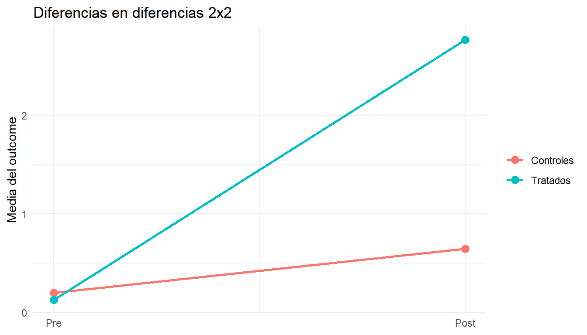
3.3 1.3 Cálculo manual del DiD
did_cells <- df_2x2 %>%
group_by(treated, post) %>%
summarise(ybar = mean(y), .groups = "drop")
did_cellsatt_manual <-
(did_cells %>% filter(treated == 1, post == 1) %>% pull(ybar) -
did_cells %>% filter(treated == 1, post == 0) %>% pull(ybar)) -
(did_cells %>% filter(treated == 0, post == 1) %>% pull(ybar) -
did_cells %>% filter(treated == 0, post == 0) %>% pull(ybar))
att_manual[1] 2.190293.4 1.4 DiD como regresión
mod_2x2 <- feols(y ~ treated * post, data = df_2x2, cluster = ~id)
summary(mod_2x2)OLS estimation, Dep. Var.: y
Observations: 2,000
Standard-errors: Clustered (id)
Estimate Std. Error t value Pr(>|t|)
(Intercept) 0.200261 0.072588 2.758858 5.9063e-03 **
treated -0.070809 0.102802 -0.688794 4.9111e-01
post 0.445031 0.061117 7.281658 6.6751e-13 ***
treated:post 2.190290 0.089202 24.554241 < 2.2e-16 ***
---
Signif. codes: 0 '***' 0.001 '**' 0.01 '*' 0.05 '.' 0.1 ' ' 1
RMSE: 1.61526 Adj. R2: 0.303647La interacción treated:post es el estimador DiD.
3.5 1.5 Tabla de resultados
modelsummary(
list("DiD 2x2" = mod_2x2),
statistic = "({std.error})",
stars = TRUE,
output = "gt"
)| DiD 2x2 | |
|---|---|
| (Intercept) | 0.200** |
| (0.073) | |
| treated | -0.071 |
| (0.103) | |
| post | 0.445*** |
| (0.061) | |
| treated × post | 2.190*** |
| (0.089) | |
| Num.Obs. | 2000 |
| R2 | 0.305 |
| R2 Adj. | 0.304 |
| AIC | 7601.7 |
| BIC | 7624.2 |
| RMSE | 1.62 |
| Std.Errors | by: id |
| + p < 0.1, * p < 0.05, ** p < 0.01, *** p < 0.001 | |
# Para guardar la tabla, descomenta una de estas líneas:
# modelsummary(list("DiD 2x2" = mod_2x2), output = "resultados/did_2x2.html")
# modelsummary(list("DiD 2x2" = mod_2x2), output = "resultados/did_2x2.docx")
# modelsummary(list("DiD 2x2" = mod_2x2), output = "resultados/did_2x2.tex")4 2. Estructura de datos necesaria
Para estimar DiD necesitamos, como mínimo:
- una variable de unidad (
id), si tenemos panel; - una variable temporal (
year,month, etc.); - un outcome (
y); - una variable de tratamiento (
D); - una variable de grupo de tratamiento o cohorte (
G) si hay adopción escalonada; - covariables pretratamiento si queremos tendencias paralelas condicionales.
4.1 2.1 Simulación de un panel con adopción escalonada
n_id <- 1200
years <- 2010:2020
unit_data <- tibble(
id = 1:n_id,
gender = sample(c("Mujer", "Hombre"), n_id, replace = TRUE),
sector = sample(c("Industria", "Servicios", "Construccion"), n_id, replace = TRUE,
prob = c(0.3, 0.5, 0.2)),
size0 = rlnorm(n_id, meanlog = 2, sdlog = 0.5),
x1 = rnorm(n_id),
x2 = rbinom(n_id, 1, 0.4),
G = sample(c(0, 2015, 2016, 2017, 2018), n_id, replace = TRUE,
prob = c(0.35, 0.15, 0.18, 0.17, 0.15))
)
df <- crossing(id = 1:n_id, year = years) %>%
left_join(unit_data, by = "id") %>%
mutate(
treated_ever = as.integer(G > 0),
D = as.integer(G > 0 & year >= G),
rel_time = if_else(G > 0, year - G, NA_integer_),
unit_fe = rep(rnorm(n_id), each = length(years)),
year_fe = 0.15 * (year - min(year)),
# Tendencias heterogeneas por sector y genero
trend_sector = case_when(
sector == "Industria" ~ 0.05 * (year - min(year)),
sector == "Servicios" ~ 0.02 * (year - min(year)),
TRUE ~ 0.00 * (year - min(year))
),
trend_gender = if_else(gender == "Mujer", 0.03 * (year - min(year)), 0),
dynamic_te = case_when(
D == 1 & rel_time == 0 ~ 0.8,
D == 1 & rel_time == 1 ~ 1.2,
D == 1 & rel_time >= 2 ~ 1.8,
TRUE ~ 0
),
y = unit_fe + year_fe + trend_sector + trend_gender +
0.4 * x1 + 0.3 * x2 + 0.05 * log(size0) + dynamic_te + rnorm(n(), sd = 1)
)
head(df)Convención habitual en did::att_gt():
G = 0indica unidades nunca tratadas.G = año de tratamientoindica la primera fecha de tratamiento.
5 3. TWFE sin covariables
El modelo TWFE básico es:
\[ Y_{it}=\alpha_i + \lambda_t + \beta D_{it}+u_{it} \]
donde:
alpha_ison efectos fijos de unidad;lambda_tson efectos fijos de tiempo;D_itindica tratamiento.
twfe_basic <- feols(y ~ D | id + year, data = df, cluster = ~id)
summary(twfe_basic)OLS estimation, Dep. Var.: y
Observations: 13,200
Fixed-effects: id: 1,200, year: 11
Standard-errors: Clustered (id)
Estimate Std. Error t value Pr(>|t|)
D 1.2511 0.033504 37.3413 < 2.2e-16 ***
---
Signif. codes: 0 '***' 0.001 '**' 0.01 '*' 0.05 '.' 0.1 ' ' 1
RMSE: 0.97421 Adj. R2: 0.701563
Within R2: 0.10618 5.1 3.1 Tabla TWFE básica
modelsummary(
list("TWFE sin covariables" = twfe_basic),
statistic = "({std.error})",
stars = TRUE,
output = "gt"
)| TWFE sin covariables | |
|---|---|
| D | 1.251*** |
| (0.034) | |
| Num.Obs. | 13200 |
| R2 | 0.729 |
| R2 Adj. | 0.702 |
| R2 Within | 0.106 |
| R2 Within Adj. | 0.106 |
| AIC | 39192.2 |
| BIC | 48260.1 |
| RMSE | 0.97 |
| Std.Errors | by: id |
| FE: id | X |
| FE: year | X |
| + p < 0.1, * p < 0.05, ** p < 0.01, *** p < 0.001 | |
# Exportar si se desea:
# modelsummary(list("TWFE sin covariables" = twfe_basic), output = "resultados/twfe_basico.html")5.2 3.2 Event study TWFE básico
El event study TWFE usa dummies de tiempo relativo al tratamiento:
\[ Y_{it}=\alpha_i+\lambda_t+\sum_{k \neq -1}\beta_k 1\{t-G_i=k\}+u_{it} \]
es_twfe <- feols(
y ~ i(rel_time, ref = -1) | id + year,
data = df %>% filter(G > 0),
cluster = ~id
)
summary(es_twfe)OLS estimation, Dep. Var.: y
Observations: 8,756
Fixed-effects: id: 796, year: 11
Standard-errors: Clustered (id)
Estimate Std. Error t value Pr(>|t|)
rel_time::-8 2.096495 0.176488 11.87898 < 2.2e-16 ***
rel_time::-7 1.784837 0.145710 12.24925 < 2.2e-16 ***
rel_time::-6 1.484251 0.125365 11.83946 < 2.2e-16 ***
rel_time::-5 1.207956 0.105048 11.49909 < 2.2e-16 ***
rel_time::-4 0.846194 0.089966 9.40571 < 2.2e-16 ***
rel_time::-3 0.593426 0.073345 8.09088 2.2112e-15 ***
rel_time::-2 0.275151 0.057856 4.75581 2.3467e-06 ***
rel_time::0 0.494582 0.050390 9.81508 < 2.2e-16 ***
rel_time::1 0.545419 0.058182 9.37438 < 2.2e-16 ***
rel_time::2 0.826282 0.059835 13.80942 < 2.2e-16 ***
rel_time::3 0.602349 0.069616 8.65245 < 2.2e-16 ***
rel_time::4 0.260754 0.081518 3.19872 1.4351e-03 **
... 1 variable was removed because of collinearity (rel_time::5)
---
Signif. codes: 0 '***' 0.001 '**' 0.01 '*' 0.05 '.' 0.1 ' ' 1
RMSE: 0.959524 Adj. R2: 0.739483
Within R2: 0.058834iplot(es_twfe,
xlab = "Tiempo relativo al tratamiento",
ylab = "Efecto estimado",
main = "Event study TWFE")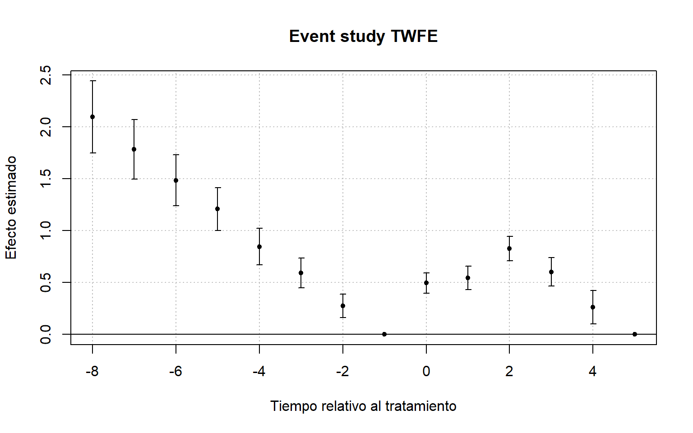
Advertencia: este event study TWFE puede ser problemático en diseños escalonados con efectos heterogéneos. Sirve como benchmark descriptivo, no necesariamente como especificación principal.
5.3 3.3 Exportar resultados del event study TWFE
es_twfe_tidy <- tidy(es_twfe, conf.int = TRUE)
es_twfe_tidy# Guardar tabla:
# readr::write_csv(es_twfe_tidy, "resultados/event_study_twfe.csv")
# Guardar grafico:
# png("resultados/event_study_twfe.png", width = 900, height = 600)
# iplot(es_twfe,
# xlab = "Tiempo relativo al tratamiento",
# ylab = "Efecto estimado",
# main = "Event study TWFE")
# dev.off()6 4. Diagnósticos: qué mirar antes de interpretar DiD
6.1 4.1 Gráficos de tendencias pretratamiento
df %>%
mutate(group = if_else(G == 0, "Nunca tratados", "Alguna vez tratados")) %>%
group_by(group, year) %>%
summarise(ybar = mean(y), .groups = "drop") %>%
ggplot(aes(year, ybar, color = group)) +
geom_line(linewidth = 1) +
geom_point() +
labs(x = NULL, y = "Media del outcome", color = NULL,
title = "Tendencias medias por grupo") +
theme_minimal()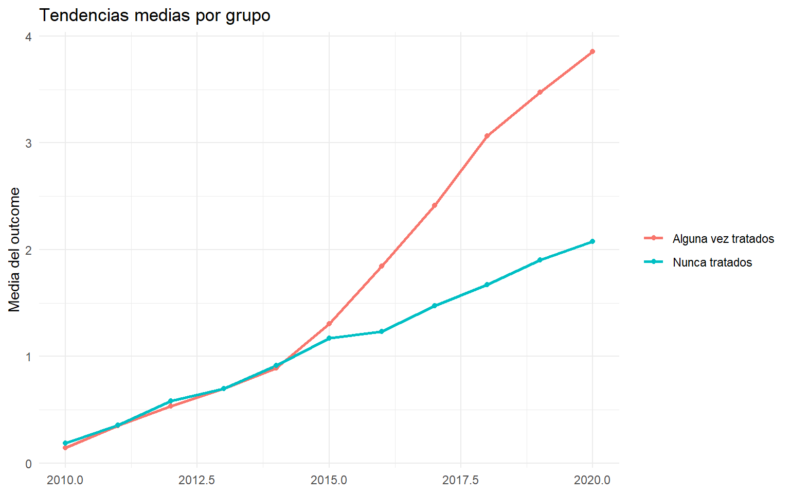
Este gráfico no prueba tendencias paralelas, pero ayuda a detectar divergencias fuertes antes del tratamiento.
6.2 4.2 Test de pretrends en event study TWFE
# Coeficientes de leads en el event study TWFE.
# El patron de nombres puede variar por version de fixest.
names(coef(es_twfe)) [1] "rel_time::-8" "rel_time::-7" "rel_time::-6" "rel_time::-5" "rel_time::-4"
[6] "rel_time::-3" "rel_time::-2" "rel_time::0" "rel_time::1" "rel_time::2"
[11] "rel_time::3" "rel_time::4" # Test conjunto manual aproximado de algunos leads concretos:
# Ajusta los nombres de coeficientes a los que aparezcan en coefnames(es_twfe).
wald(es_twfe, "rel_time::(-5|-4|-3|-2)")Wald test, H0: joint nullity of rel_time::-5, rel_time::-4, rel_time::-3 and rel_time::-2
stat = 35.9, p-value < 2.2e-16, on 4 and 7,938 DoF, VCOV: Clustered (id).Interpretación:
- Rechazar igualdad a cero de los leads sugiere problemas de pretrends.
- No rechazar no valida automáticamente el diseño: los tests pueden tener baja potencia.
6.3 4.3 Balance en covariables pretratamiento
df_pre <- df %>%
filter(year < 2015) %>%
group_by(id) %>%
summarise(
treated_ever = max(treated_ever),
x1 = first(x1),
x2 = first(x2),
size0 = first(size0),
gender = first(gender),
sector = first(sector),
.groups = "drop"
)
df_pre %>%
group_by(treated_ever) %>%
summarise(
x1_mean = mean(x1),
x2_mean = mean(x2),
size0_mean = mean(size0),
n = n(),
.groups = "drop"
)balance_mods <- list(
"x1" = lm(x1 ~ treated_ever, data = df_pre),
"x2" = lm(x2 ~ treated_ever, data = df_pre),
"size0" = lm(size0 ~ treated_ever, data = df_pre)
)
modelsummary(
balance_mods,
statistic = "({std.error})",
stars = TRUE,
output = "gt"
)| x1 | x2 | size0 | |
|---|---|---|---|
| (Intercept) | -0.026 | 0.403*** | 8.530*** |
| (0.049) | (0.024) | (0.212) | |
| treated_ever | -0.041 | -0.014 | -0.281 |
| (0.060) | (0.030) | (0.260) | |
| Num.Obs. | 1200 | 1200 | 1200 |
| R2 | 0.000 | 0.000 | 0.001 |
| R2 Adj. | 0.000 | -0.001 | 0.000 |
| AIC | 3373.7 | 1692.7 | 6884.9 |
| BIC | 3389.0 | 1707.9 | 6900.1 |
| Log.Lik. | -1683.853 | -843.337 | -3439.433 |
| F | 0.468 | 0.220 | 1.170 |
| RMSE | 0.98 | 0.49 | 4.25 |
| + p < 0.1, * p < 0.05, ** p < 0.01, *** p < 0.001 | |||
# Exportar:
# modelsummary(balance_mods, output = "resultados/balance_covariables.html")6.4 4.4 Overlap del propensity score
Esto es especialmente importante para IPW y DR.
ps_model <- glm(
treated_ever ~ x1 + x2 + log(size0) + gender + sector,
data = df_pre,
family = binomial()
)
df_pre <- df_pre %>%
mutate(pscore = predict(ps_model, type = "response"))
summary(df_pre$pscore) Min. 1st Qu. Median Mean 3rd Qu. Max.
0.5885 0.6409 0.6649 0.6633 0.6865 0.7226 ggplot(df_pre, aes(pscore, fill = factor(treated_ever))) +
geom_density(alpha = 0.4) +
labs(x = "Propensity score", y = "Densidad", fill = "Tratado alguna vez",
title = "Overlap del propensity score") +
theme_minimal()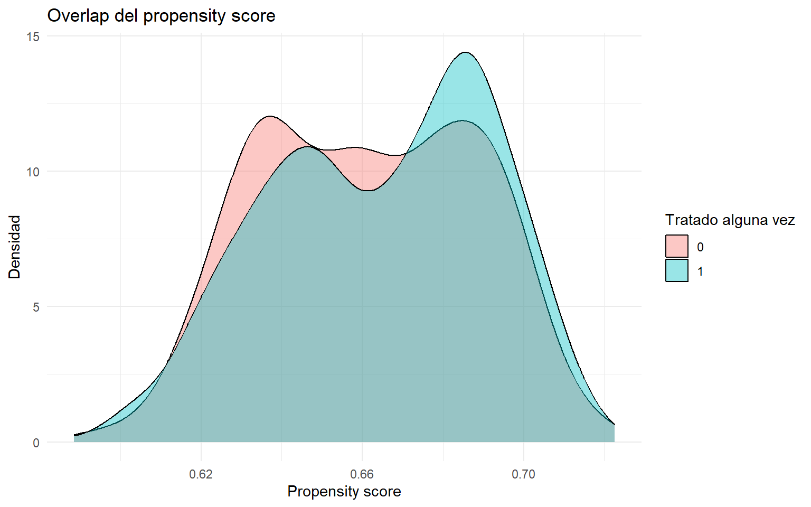
Si apenas hay solapamiento entre tratados y controles, IPW/DR pueden volverse inestables y RA puede extrapolar.
7 5. Inferencia en DiD
La inferencia es crucial porque los outcomes suelen estar serialmente correlacionados dentro de unidad. En DiD aplicado, normalmente se clusterizan errores estándar a nivel de unidad o al nivel al que se asigna el tratamiento.
7.1 5.1 Cluster por unidad
twfe_cluster_id <- feols(y ~ D | id + year, data = df, cluster = ~id)
summary(twfe_cluster_id)OLS estimation, Dep. Var.: y
Observations: 13,200
Fixed-effects: id: 1,200, year: 11
Standard-errors: Clustered (id)
Estimate Std. Error t value Pr(>|t|)
D 1.2511 0.033504 37.3413 < 2.2e-16 ***
---
Signif. codes: 0 '***' 0.001 '**' 0.01 '*' 0.05 '.' 0.1 ' ' 1
RMSE: 0.97421 Adj. R2: 0.701563
Within R2: 0.10618 7.2 5.2 Cluster por cohorte o grupo de tratamiento
Si el tratamiento se asigna a nivel de grupo, por ejemplo sector-region, el cluster debería reflejar ese nivel.
twfe_cluster_G <- feols(y ~ D | id + year, data = df, cluster = ~G)
summary(twfe_cluster_G)OLS estimation, Dep. Var.: y
Observations: 13,200
Fixed-effects: id: 1,200, year: 11
Standard-errors: Clustered (G)
Estimate Std. Error t value Pr(>|t|)
D 1.2511 0.157401 7.94847 0.0013568 **
---
Signif. codes: 0 '***' 0.001 '**' 0.01 '*' 0.05 '.' 0.1 ' ' 1
RMSE: 0.97421 Adj. R2: 0.701563
Within R2: 0.10618 Advertencia: si hay pocos clusters, la inferencia convencional puede ser demasiado optimista.
7.3 5.3 Multi-way clustering
twfe_multiway <- feols(y ~ D | id + year, data = df, cluster = ~id + year)
summary(twfe_multiway)OLS estimation, Dep. Var.: y
Observations: 13,200
Fixed-effects: id: 1,200, year: 11
Standard-errors: Clustered (id & year)
Estimate Std. Error t value Pr(>|t|)
D 1.2511 0.14338 8.72572 5.4609e-06 ***
---
Signif. codes: 0 '***' 0.001 '**' 0.01 '*' 0.05 '.' 0.1 ' ' 1
RMSE: 0.97421 Adj. R2: 0.701563
Within R2: 0.10618 7.4 5.4 Wild cluster bootstrap
library(fwildclusterboot)
boottest(
twfe_basic,
clustid = "id",
param = "D",
B = 9999
)7.5 5.5 Inferencia en did
did::att_gt() usa bootstrap multiplier y permite bandas simultáneas para event studies.
att_preview <- att_gt(
yname = "y",
tname = "year",
idname = "id",
gname = "G",
data = df,
panel = TRUE,
control_group = "notyettreated",
bstrap = TRUE,
biters = 999,
cband = TRUE
)
summary(att_preview)
Call:
att_gt(yname = "y", tname = "year", idname = "id", gname = "G",
data = df, panel = TRUE, control_group = "notyettreated",
bstrap = TRUE, cband = TRUE, biters = 999)
Reference: Callaway, Brantly and Pedro H.C. Sant'Anna. "Difference-in-Differences with Multiple Time Periods." Journal of Econometrics, Vol. 225, No. 2, pp. 200-230, 2021. <https://doi.org/10.1016/j.jeconom.2020.12.001>, <https://arxiv.org/abs/1803.09015>
Group-Time Average Treatment Effects:
Group Time ATT(g,t) Std. Error [95% Simult. Conf. Band]
2015 2011 -0.0609 0.1092 -0.4128 0.2910
2015 2012 0.0362 0.1126 -0.3268 0.3992
2015 2013 0.0313 0.1070 -0.3137 0.3763
2015 2014 0.1056 0.1113 -0.2532 0.4643
2015 2015 0.5636 0.1088 0.2129 0.9144 *
2015 2016 1.1418 0.1171 0.7644 1.5192 *
2015 2017 1.6470 0.1094 1.2944 1.9996 *
2015 2018 1.7398 0.1194 1.3548 2.1248 *
2015 2019 1.6637 0.1274 1.2529 2.0745 *
2015 2020 1.7299 0.1156 1.3572 2.1025 *
2016 2011 0.0986 0.1048 -0.2391 0.4362
2016 2012 -0.1114 0.0989 -0.4301 0.2073
2016 2013 0.0211 0.1066 -0.3226 0.3648
2016 2014 -0.1078 0.0978 -0.4229 0.2073
2016 2015 0.1061 0.0952 -0.2008 0.4130
2016 2016 0.9475 0.1052 0.6085 1.2864 *
2016 2017 1.1534 0.1001 0.8308 1.4760 *
2016 2018 1.7148 0.1139 1.3476 2.0819 *
2016 2019 1.7494 0.1214 1.3580 2.1408 *
2016 2020 1.7533 0.1196 1.3679 2.1387 *
2017 2011 -0.0013 0.1110 -0.3590 0.3564
2017 2012 0.0112 0.1012 -0.3152 0.3375
2017 2013 0.0130 0.1079 -0.3349 0.3610
2017 2014 0.0760 0.1190 -0.3076 0.4595
2017 2015 -0.0904 0.1016 -0.4179 0.2371
2017 2016 -0.0176 0.1141 -0.3855 0.3502
2017 2017 0.8092 0.1129 0.4452 1.1732 *
2017 2018 1.1499 0.1313 0.7266 1.5731 *
2017 2019 1.6625 0.1372 1.2202 2.1047 *
2017 2020 1.8008 0.1216 1.4088 2.1929 *
2018 2011 0.0220 0.1196 -0.3634 0.4074
2018 2012 0.0046 0.1136 -0.3614 0.3706
2018 2013 0.0073 0.1273 -0.4029 0.4176
2018 2014 -0.1155 0.1206 -0.5041 0.2731
2018 2015 0.0208 0.1112 -0.3376 0.3792
2018 2016 0.1735 0.1145 -0.1956 0.5425
2018 2017 -0.1376 0.1226 -0.5327 0.2575
2018 2018 0.8441 0.1235 0.4460 1.2422 *
2018 2019 1.0871 0.1208 0.6977 1.4764 *
2018 2020 1.7587 0.1398 1.3082 2.2093 *
---
Signif. codes: `*' confidence band does not cover 0
P-value for pre-test of parallel trends assumption: 0.9718
Control Group: Not Yet Treated, Anticipation Periods: 0
Estimation Method: Doubly Robust8 6. Diseño escalonado: por qué cambia todo
En un diseño escalonado, distintas unidades reciben el tratamiento en distintos momentos. El parámetro natural ya no es un único ATT, sino:
\[ ATT(g,t) \]
donde:
ges la cohorte de tratamiento;tes el periodo calendario.
El problema de TWFE en diseños escalonados es que puede comparar unidades tratadas tempranamente contra unidades tratadas más tarde, o incluso usar unidades ya tratadas como controles. Si los efectos son heterogéneos por cohorte o por tiempo desde tratamiento, el coeficiente TWFE puede mezclar efectos de forma difícil de interpretar.
8.1 6.1 Estimación Callaway & Sant’Anna sin covariables
att_cs <- att_gt(
yname = "y",
tname = "year",
idname = "id",
gname = "G",
data = df,
panel = TRUE,
control_group = "notyettreated",
bstrap = TRUE,
biters = 999,
cband = TRUE
)
summary(att_cs)
Call:
att_gt(yname = "y", tname = "year", idname = "id", gname = "G",
data = df, panel = TRUE, control_group = "notyettreated",
bstrap = TRUE, cband = TRUE, biters = 999)
Reference: Callaway, Brantly and Pedro H.C. Sant'Anna. "Difference-in-Differences with Multiple Time Periods." Journal of Econometrics, Vol. 225, No. 2, pp. 200-230, 2021. <https://doi.org/10.1016/j.jeconom.2020.12.001>, <https://arxiv.org/abs/1803.09015>
Group-Time Average Treatment Effects:
Group Time ATT(g,t) Std. Error [95% Simult. Conf. Band]
2015 2011 -0.0609 0.1090 -0.4190 0.2971
2015 2012 0.0362 0.1181 -0.3518 0.4242
2015 2013 0.0313 0.1039 -0.3102 0.3727
2015 2014 0.1056 0.1081 -0.2495 0.4606
2015 2015 0.5636 0.1066 0.2135 0.9137 *
2015 2016 1.1418 0.1080 0.7870 1.4966 *
2015 2017 1.6470 0.1205 1.2512 2.0427 *
2015 2018 1.7398 0.1193 1.3478 2.1318 *
2015 2019 1.6637 0.1182 1.2752 2.0521 *
2015 2020 1.7299 0.1200 1.3356 2.1242 *
2016 2011 0.0986 0.1114 -0.2673 0.4645
2016 2012 -0.1114 0.1091 -0.4698 0.2470
2016 2013 0.0211 0.1053 -0.3247 0.3670
2016 2014 -0.1078 0.0916 -0.4087 0.1931
2016 2015 0.1061 0.0965 -0.2110 0.4232
2016 2016 0.9475 0.1102 0.5855 1.3094 *
2016 2017 1.1534 0.1102 0.7914 1.5154 *
2016 2018 1.7148 0.1203 1.3197 2.1098 *
2016 2019 1.7494 0.1138 1.3755 2.1232 *
2016 2020 1.7533 0.1179 1.3661 2.1405 *
2017 2011 -0.0013 0.1101 -0.3630 0.3603
2017 2012 0.0112 0.1034 -0.3284 0.3507
2017 2013 0.0130 0.1059 -0.3347 0.3608
2017 2014 0.0760 0.1146 -0.3005 0.4524
2017 2015 -0.0904 0.1045 -0.4338 0.2531
2017 2016 -0.0176 0.1260 -0.4316 0.3963
2017 2017 0.8092 0.1263 0.3943 1.2241 *
2017 2018 1.1499 0.1303 0.7217 1.5780 *
2017 2019 1.6625 0.1328 1.2262 2.0987 *
2017 2020 1.8008 0.1304 1.3723 2.2293 *
2018 2011 0.0220 0.1175 -0.3642 0.4081
2018 2012 0.0046 0.1214 -0.3942 0.4034
2018 2013 0.0073 0.1249 -0.4029 0.4175
2018 2014 -0.1155 0.1228 -0.5190 0.2880
2018 2015 0.0208 0.1102 -0.3413 0.3829
2018 2016 0.1735 0.1186 -0.2161 0.5630
2018 2017 -0.1376 0.1294 -0.5627 0.2874
2018 2018 0.8441 0.1157 0.4639 1.2243 *
2018 2019 1.0871 0.1377 0.6347 1.5395 *
2018 2020 1.7587 0.1401 1.2985 2.2190 *
---
Signif. codes: `*' confidence band does not cover 0
P-value for pre-test of parallel trends assumption: 0.9718
Control Group: Not Yet Treated, Anticipation Periods: 0
Estimation Method: Doubly Robust8.2 6.2 Agregación simple
agg_cs_simple <- aggte(att_cs, type = "simple")
summary(agg_cs_simple)
Call:
aggte(MP = att_cs, type = "simple")
Reference: Callaway, Brantly and Pedro H.C. Sant'Anna. "Difference-in-Differences with Multiple Time Periods." Journal of Econometrics, Vol. 225, No. 2, pp. 200-230, 2021. <https://doi.org/10.1016/j.jeconom.2020.12.001>, <https://arxiv.org/abs/1803.09015>
ATT Std. Error [ 95% Conf. Int.]
1.3879 0.0485 1.2929 1.4829 *
---
Signif. codes: `*' confidence band does not cover 0
Control Group: Not Yet Treated, Anticipation Periods: 0
Estimation Method: Doubly Robust8.3 6.3 Event study moderno con did
agg_cs_dynamic <- aggte(att_cs, type = "dynamic")
summary(agg_cs_dynamic)
Call:
aggte(MP = att_cs, type = "dynamic")
Reference: Callaway, Brantly and Pedro H.C. Sant'Anna. "Difference-in-Differences with Multiple Time Periods." Journal of Econometrics, Vol. 225, No. 2, pp. 200-230, 2021. <https://doi.org/10.1016/j.jeconom.2020.12.001>, <https://arxiv.org/abs/1803.09015>
Overall summary of ATT's based on event-study/dynamic aggregation:
ATT Std. Error [ 95% Conf. Int.]
1.4709 0.0566 1.3599 1.5819 *
Dynamic Effects:
Event time Estimate Std. Error [95% Simult. Conf. Band]
-7 0.0220 0.1239 -0.3206 0.3646
-6 0.0015 0.0865 -0.2378 0.2407
-5 0.0411 0.0676 -0.1458 0.2280
-4 -0.0679 0.0560 -0.2228 0.0870
-3 0.0389 0.0611 -0.1302 0.2079
-2 -0.0048 0.0608 -0.1730 0.1635
-1 0.0188 0.0558 -0.1356 0.1732
0 0.7931 0.0561 0.6380 0.9481 *
1 1.1345 0.0569 0.9771 1.2920 *
2 1.6945 0.0591 1.5311 1.8579 *
3 1.7634 0.0678 1.5758 1.9509 *
4 1.7101 0.0885 1.4653 1.9550 *
5 1.7299 0.1263 1.3805 2.0793 *
---
Signif. codes: `*' confidence band does not cover 0
Control Group: Not Yet Treated, Anticipation Periods: 0
Estimation Method: Doubly Robustggdid(agg_cs_dynamic) +
labs(title = "Event study Callaway & Sant'Anna sin covariables")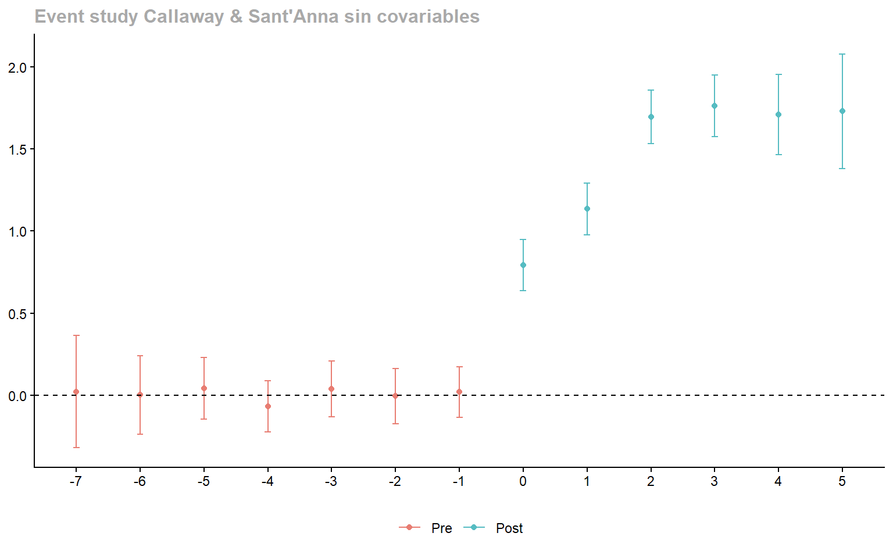
es_df <- tibble(
event_time = agg_cs_dynamic$egt,
att = agg_cs_dynamic$att.egt,
se = agg_cs_dynamic$se.egt
) %>%
mutate(
ci_low = att - 1.96 * se,
ci_high = att + 1.96 * se
)
ggplot(es_df, aes(x = event_time, y = att)) +
geom_hline(yintercept = 0, linetype = "dashed") +
geom_vline(xintercept = -1, linetype = "dotted") +
geom_ribbon(
aes(ymin = ci_low, ymax = ci_high),
alpha = 0.2
) +
geom_line() +
geom_point() +
labs(
title = "Event study - Callaway & Sant'Anna",
x = "Tiempo relativo al tratamiento",
y = "ATT dinámico"
) +
theme_minimal()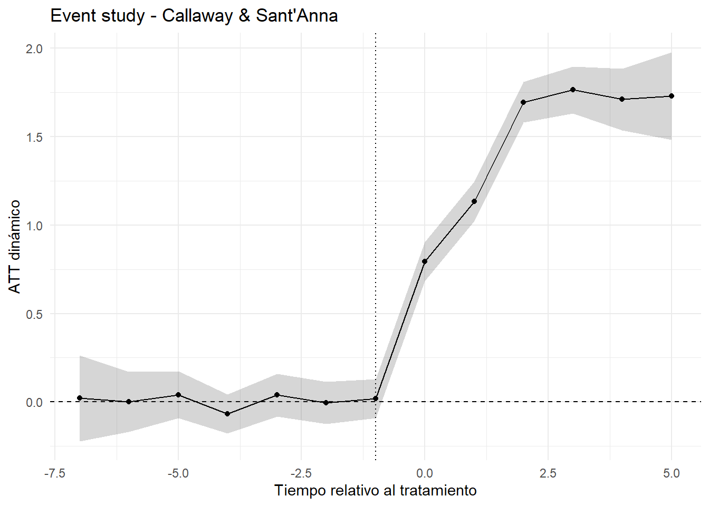
8.4 6.4 Efectos por cohorte
agg_cs_group <- aggte(att_cs, type = "group")
summary(agg_cs_group)
Call:
aggte(MP = att_cs, type = "group")
Reference: Callaway, Brantly and Pedro H.C. Sant'Anna. "Difference-in-Differences with Multiple Time Periods." Journal of Econometrics, Vol. 225, No. 2, pp. 200-230, 2021. <https://doi.org/10.1016/j.jeconom.2020.12.001>, <https://arxiv.org/abs/1803.09015>
Overall summary of ATT's based on group/cohort aggregation:
ATT Std. Error [ 95% Conf. Int.]
1.3705 0.0551 1.2626 1.4785 *
Group Effects:
Group Estimate Std. Error [95% Simult. Conf. Band]
2015 1.4143 0.0855 1.1964 1.6322 *
2016 1.4637 0.0906 1.2328 1.6945 *
2017 1.3556 0.1061 1.0853 1.6259 *
2018 1.2300 0.0943 0.9898 1.4702 *
---
Signif. codes: `*' confidence band does not cover 0
Control Group: Not Yet Treated, Anticipation Periods: 0
Estimation Method: Doubly Robustggdid(agg_cs_group) +
labs(title = "Efectos agregados por cohorte")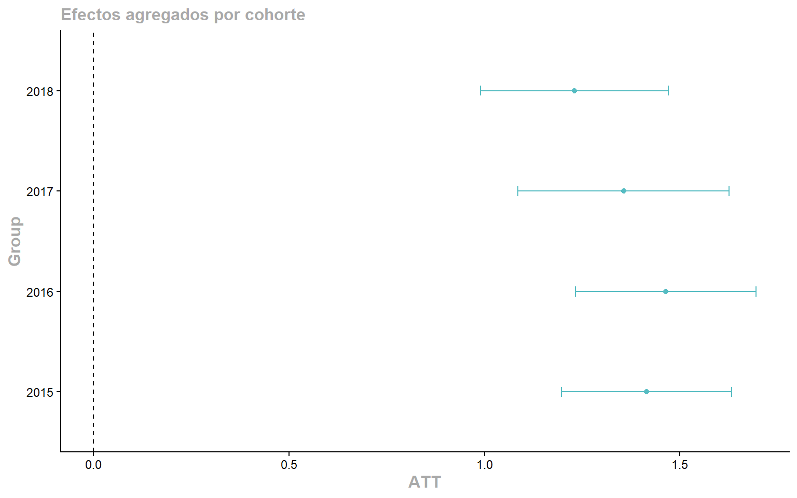
8.5 6.5 Efectos por calendario
agg_cs_calendar <- aggte(att_cs, type = "calendar")
summary(agg_cs_calendar)
Call:
aggte(MP = att_cs, type = "calendar")
Reference: Callaway, Brantly and Pedro H.C. Sant'Anna. "Difference-in-Differences with Multiple Time Periods." Journal of Econometrics, Vol. 225, No. 2, pp. 200-230, 2021. <https://doi.org/10.1016/j.jeconom.2020.12.001>, <https://arxiv.org/abs/1803.09015>
Overall summary of ATT's based on calendar time aggregation:
ATT Std. Error [ 95% Conf. Int.]
1.2495 0.0539 1.1439 1.3552 *
Time Effects:
Time Estimate Std. Error [95% Simult. Conf. Band]
2015 0.5636 0.1038 0.2923 0.8350 *
2016 1.0411 0.0796 0.8329 1.2492 *
2017 1.1981 0.0767 0.9976 1.3987 *
2018 1.3783 0.0730 1.1875 1.5691 *
2019 1.5552 0.0759 1.3568 1.7535 *
2020 1.7609 0.0722 1.5721 1.9497 *
---
Signif. codes: `*' confidence band does not cover 0
Control Group: Not Yet Treated, Anticipation Periods: 0
Estimation Method: Doubly Robust8.6 6.6 Exportar tablas y gráficos de did
# Los objetos de did no siempre son tan directos como modelos fixest.
# Podemos extraer resultados principales manualmente.
cs_simple_table <- tibble(
estimador = "Callaway-Santanna sin covariables",
tipo = "simple",
att = agg_cs_simple$overall.att,
se = agg_cs_simple$overall.se,
ci_low = att - 1.96 * se,
ci_high = att + 1.96 * se
)
cs_simple_table# Exportar tabla:
# readr::write_csv(cs_simple_table, "resultados/cs_simple.csv")
# gt::gtsave(gt(cs_simple_table), "resultados/cs_simple.html")
# Guardar grafico:
# ggsave("resultados/cs_event_study.png", width = 8, height = 5, dpi = 300)9 7. Anticipación del tratamiento
La hipótesis estándar de DiD presupone que las unidades no cambian su comportamiento antes de recibir el tratamiento. Pero muchas veces puede haber anticipación: si las unidades saben que serán tratadas, pueden ajustar su conducta antes.
Ejemplos:
- empresas que anticipan una subvención;
- trabajadores que anticipan un cambio regulatorio;
- municipios que preparan inversiones antes de una política.
9.1 7.1 Event study como diagnóstico de anticipación
Los leads del event study ayudan a detectar anticipación, aunque no la prueban de forma definitiva.
ggdid(agg_cs_dynamic) +
labs(title = "Leads del event study como diagnostico de anticipacion")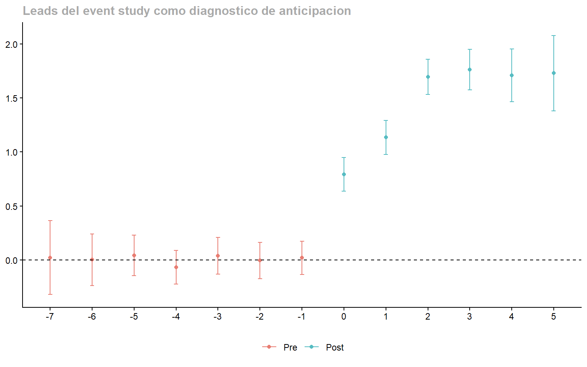
9.2 7.2 Permitir anticipación en att_gt()
Si creemos que hay anticipación de un periodo, podemos indicar que el tratamiento empieza efectivamente antes para fines de identificación.
att_cs_ant1 <- att_gt(
yname = "y",
tname = "year",
idname = "id",
gname = "G",
data = df,
panel = TRUE,
control_group = "notyettreated",
anticipation = 1,
bstrap = TRUE,
biters = 999,
cband = TRUE
)
agg_cs_ant1_dynamic <- aggte(att_cs_ant1, type = "dynamic")
summary(agg_cs_ant1_dynamic)
Call:
aggte(MP = att_cs_ant1, type = "dynamic")
Reference: Callaway, Brantly and Pedro H.C. Sant'Anna. "Difference-in-Differences with Multiple Time Periods." Journal of Econometrics, Vol. 225, No. 2, pp. 200-230, 2021. <https://doi.org/10.1016/j.jeconom.2020.12.001>, <https://arxiv.org/abs/1803.09015>
Overall summary of ATT's based on event-study/dynamic aggregation:
ATT Std. Error [ 95% Conf. Int.]
1.5222 0.0565 1.4114 1.6331 *
Dynamic Effects:
Event time Estimate Std. Error [95% Simult. Conf. Band]
-7 0.0220 0.1195 -0.3230 0.3669
-6 0.0015 0.0781 -0.2239 0.2268
-5 0.0411 0.0652 -0.1471 0.2294
-4 -0.0640 0.0588 -0.2338 0.1058
-3 0.0522 0.0647 -0.1346 0.2390
-2 0.0090 0.0556 -0.1514 0.1694
-1 0.0188 0.0570 -0.1456 0.1832
0 0.8108 0.0598 0.6382 0.9834 *
1 1.1654 0.0604 0.9911 1.3398 *
2 1.7243 0.0669 1.5314 1.9172 *
3 1.8343 0.0678 1.6385 2.0300 *
4 1.7963 0.0881 1.5420 2.0506 *
5 1.8024 0.1204 1.4548 2.1500 *
---
Signif. codes: `*' confidence band does not cover 0
Control Group: Not Yet Treated, Anticipation Periods: 1
Estimation Method: Doubly Robustggdid(agg_cs_ant1_dynamic) +
labs(title = "Event study permitiendo un periodo de anticipacion")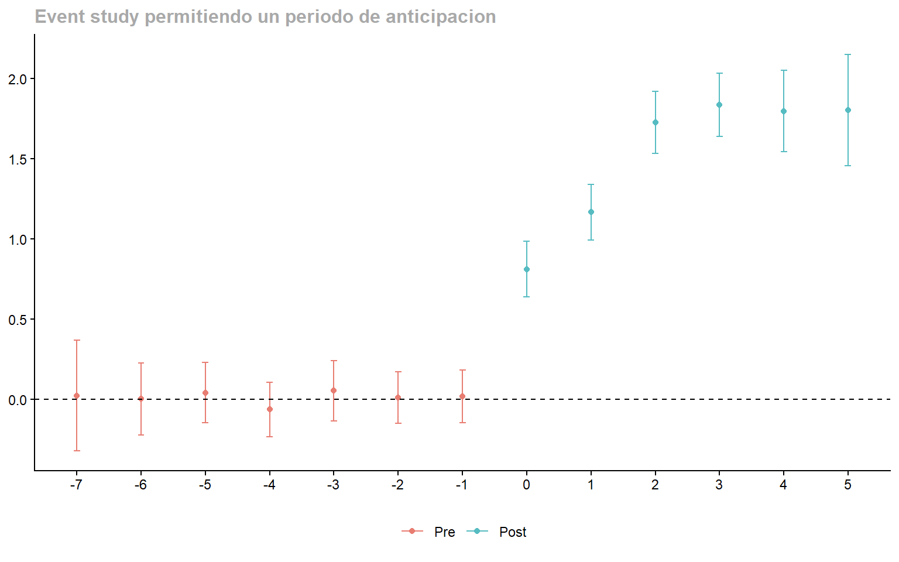
9.3 7.3 Comparar con y sin anticipación
anticipation_table <- tibble(
especificacion = c("Sin anticipacion", "Anticipacion = 1"),
att = c(agg_cs_simple$overall.att,
aggte(att_cs_ant1, type = "simple")$overall.att),
se = c(agg_cs_simple$overall.se,
aggte(att_cs_ant1, type = "simple")$overall.se)
) %>%
mutate(
ci_low = att - 1.96 * se,
ci_high = att + 1.96 * se
)
anticipation_table# Exportar:
# readr::write_csv(anticipation_table, "resultados/comparacion_anticipacion.csv")10 8. Covariables en DiD
Meter covariables no es un acto mecánico. Cambia la hipótesis de identificación. Sin covariables, se pide tendencias paralelas incondicionales:
\[ E[\Delta Y(0)\mid D=1] = E[\Delta Y(0)\mid D=0] \]
Con covariables, se pide tendencias paralelas condicionales:
\[ E[\Delta Y(0)\mid D=1,X] = E[\Delta Y(0)\mid D=0,X] \]
10.1 8.1 Qué covariables usar
Buenas candidatas:
- covariables pretratamiento;
- niveles baseline de variables dinámicas;
- outcomes pretratamiento;
- características que afectan selección al tratamiento y evolución del outcome.
Evitar:
- covariables post-tratamiento;
- variables afectadas por el tratamiento;
- kitchen sink controls sin justificación;
- variables que destruyen overlap.
10.2 8.2 Estandarización
Estandarizar no cambia la identificación. Puede ayudar para interpretación, estabilidad numérica o modelos flexibles.
df <- df %>%
mutate(
x1_std = as.numeric(scale(x1)),
log_size0 = log(size0),
log_size0_std = as.numeric(scale(log_size0))
)11 9. TWFE con covariables
11.1 9.1 Covariables time-varying en TWFE
twfe_x <- feols(
y ~ D + x1_std + x2 + log_size0_std | id + year,
data = df,
cluster = ~id
)
summary(twfe_x)OLS estimation, Dep. Var.: y
Observations: 13,200
Fixed-effects: id: 1,200, year: 11
Standard-errors: Clustered (id)
Estimate Std. Error t value Pr(>|t|)
D 1.2511 0.033504 37.3413 < 2.2e-16 ***
... 3 variables were removed because of collinearity (x1_std, x2 and log_size0_std)
---
Signif. codes: 0 '***' 0.001 '**' 0.01 '*' 0.05 '.' 0.1 ' ' 1
RMSE: 0.97421 Adj. R2: 0.701563
Within R2: 0.10618 Con efectos fijos individuales, las covariables invariantes en el tiempo se absorben. Si gender no cambia dentro de id, no puedes estimar su efecto directo junto con efectos fijos de individuo.
11.2 9.2 Tabla comparando TWFE sin y con covariables
modelsummary(
list(
"TWFE sin X" = twfe_basic,
"TWFE con X" = twfe_x
),
statistic = "({std.error})",
stars = TRUE,
output = "gt"
)| TWFE sin X | TWFE con X | |
|---|---|---|
| D | 1.251*** | 1.251*** |
| (0.034) | (0.034) | |
| Num.Obs. | 13200 | 13200 |
| R2 | 0.729 | 0.729 |
| R2 Adj. | 0.702 | 0.702 |
| R2 Within | 0.106 | 0.106 |
| R2 Within Adj. | 0.106 | 0.106 |
| AIC | 39192.2 | 39192.2 |
| BIC | 48260.1 | 48260.1 |
| RMSE | 0.97 | 0.97 |
| Std.Errors | by: id | by: id |
| FE: id | X | X |
| FE: year | X | X |
| + p < 0.1, * p < 0.05, ** p < 0.01, *** p < 0.001 | ||
# Exportar:
# modelsummary(list("TWFE sin X" = twfe_basic, "TWFE con X" = twfe_x),
# output = "resultados/twfe_con_sin_x.html")11.3 9.3 Covariables invariantes interactuadas con efectos temporales
Si creemos que las tendencias varían por género o sector, podemos permitir tendencias específicas por año:
\[ Y_{it}=\alpha_i+\lambda_t+\beta D_{it}+X_i\times\lambda_t+u_{it} \]
twfe_interact <- feols(
y ~ D + i(year, gender) + i(year, sector) | id + year,
data = df,
cluster = ~id
)
summary(twfe_interact)OLS estimation, Dep. Var.: y
Observations: 13,200
Fixed-effects: id: 1,200, year: 11
Standard-errors: Clustered (id)
Estimate Std. Error t value Pr(>|t|)
D 1.246849 0.032996 37.787668 < 2.2e-16 ***
year::2010:gender::Mujer -0.297763 0.082839 -3.594486 3.3823e-04 ***
year::2011:gender::Hombre 0.358487 0.085061 4.214459 2.6916e-05 ***
year::2012:gender::Hombre 0.224333 0.082145 2.730933 6.4081e-03 **
year::2013:gender::Hombre 0.179986 0.085273 2.110705 3.5004e-02 *
year::2014:gender::Hombre 0.207285 0.082045 2.526474 1.1649e-02 *
year::2015:gender::Hombre 0.274397 0.086628 3.167543 1.5761e-03 **
year::2016:gender::Hombre 0.256090 0.084346 3.036171 2.4477e-03 **
year::2017:gender::Hombre 0.107553 0.084258 1.276469 2.0204e-01
year::2018:gender::Hombre 0.148025 0.083080 1.781712 7.5049e-02 .
year::2019:gender::Hombre 0.071265 0.081669 0.872602 3.8305e-01
year::2010:sector::Industria -0.366470 0.102992 -3.558228 3.8795e-04 ***
year::2010:sector::Servicios -0.289746 0.116065 -2.496423 1.2679e-02 *
year::2011:sector::Construccion 0.172039 0.113015 1.522264 1.2821e-01
year::2011:sector::Industria -0.114471 0.066130 -1.731015 8.3706e-02 .
year::2012:sector::Construccion 0.202192 0.108545 1.862755 6.2741e-02 .
year::2012:sector::Industria 0.004120 0.065482 0.062916 9.4984e-01
year::2013:sector::Construccion 0.146778 0.115732 1.268260 2.0495e-01
year::2013:sector::Industria -0.000504 0.068390 -0.007363 9.9413e-01
year::2014:sector::Construccion 0.125290 0.109175 1.147607 2.5136e-01
year::2014:sector::Industria -0.114212 0.064244 -1.777780 7.5693e-02 .
year::2015:sector::Construccion 0.071021 0.107339 0.661649 5.0832e-01
year::2015:sector::Industria -0.004852 0.071351 -0.068006 9.4579e-01
year::2016:sector::Construccion 0.092670 0.108790 0.851826 3.9448e-01
year::2016:sector::Industria 0.077698 0.067508 1.150945 2.4998e-01
year::2017:sector::Construccion 0.021100 0.111745 0.188824 8.5026e-01
year::2017:sector::Industria 0.087875 0.066537 1.320707 1.8685e-01
year::2018:sector::Construccion -0.096195 0.113479 -0.847695 3.9678e-01
year::2018:sector::Industria 0.118912 0.068482 1.736382 8.2753e-02 .
year::2019:sector::Construccion -0.021983 0.104677 -0.210008 8.3370e-01
year::2019:sector::Industria 0.151428 0.069460 2.180090 2.9445e-02 *
year::2020:sector::Industria 0.307419 0.063880 4.812458 1.6806e-06 ***
... 22 variables were removed because of collinearity (year::2011:gender::Mujer, year::2012:gender::Mujer and 20 others [full set in $collin.var])
---
Signif. codes: 0 '***' 0.001 '**' 0.01 '*' 0.05 '.' 0.1 ' ' 1
RMSE: 0.969981 Adj. R2: 0.703381
Within R2: 0.11392311.4 9.4 Tabla TWFE con interacciones
modelsummary(
list(
"TWFE" = twfe_basic,
"TWFE + X" = twfe_x,
"TWFE + genero/sector x año" = twfe_interact
),
statistic = "({std.error})",
stars = TRUE,
output = "gt"
)| TWFE | TWFE + X | TWFE + genero/sector x año | |
|---|---|---|---|
| D | 1.251*** | 1.251*** | 1.247*** |
| (0.034) | (0.034) | (0.033) | |
| year = 2010 × gender = Mujer | -0.298*** | ||
| (0.083) | |||
| year = 2011 × gender = Hombre | 0.358*** | ||
| (0.085) | |||
| year = 2012 × gender = Hombre | 0.224** | ||
| (0.082) | |||
| year = 2013 × gender = Hombre | 0.180* | ||
| (0.085) | |||
| year = 2014 × gender = Hombre | 0.207* | ||
| (0.082) | |||
| year = 2015 × gender = Hombre | 0.274** | ||
| (0.087) | |||
| year = 2016 × gender = Hombre | 0.256** | ||
| (0.084) | |||
| year = 2017 × gender = Hombre | 0.108 | ||
| (0.084) | |||
| year = 2018 × gender = Hombre | 0.148+ | ||
| (0.083) | |||
| year = 2019 × gender = Hombre | 0.071 | ||
| (0.082) | |||
| year = 2010 × sector = Industria | -0.366*** | ||
| (0.103) | |||
| year = 2010 × sector = Servicios | -0.290* | ||
| (0.116) | |||
| year = 2011 × sector = Construccion | 0.172 | ||
| (0.113) | |||
| year = 2011 × sector = Industria | -0.114+ | ||
| (0.066) | |||
| year = 2012 × sector = Construccion | 0.202+ | ||
| (0.109) | |||
| year = 2012 × sector = Industria | 0.004 | ||
| (0.065) | |||
| year = 2013 × sector = Construccion | 0.147 | ||
| (0.116) | |||
| year = 2013 × sector = Industria | -0.001 | ||
| (0.068) | |||
| year = 2014 × sector = Construccion | 0.125 | ||
| (0.109) | |||
| year = 2014 × sector = Industria | -0.114+ | ||
| (0.064) | |||
| year = 2015 × sector = Construccion | 0.071 | ||
| (0.107) | |||
| year = 2015 × sector = Industria | -0.005 | ||
| (0.071) | |||
| year = 2016 × sector = Construccion | 0.093 | ||
| (0.109) | |||
| year = 2016 × sector = Industria | 0.078 | ||
| (0.068) | |||
| year = 2017 × sector = Construccion | 0.021 | ||
| (0.112) | |||
| year = 2017 × sector = Industria | 0.088 | ||
| (0.067) | |||
| year = 2018 × sector = Construccion | -0.096 | ||
| (0.113) | |||
| year = 2018 × sector = Industria | 0.119+ | ||
| (0.068) | |||
| year = 2019 × sector = Construccion | -0.022 | ||
| (0.105) | |||
| year = 2019 × sector = Industria | 0.151* | ||
| (0.069) | |||
| year = 2020 × sector = Industria | 0.307*** | ||
| (0.064) | |||
| Num.Obs. | 13200 | 13200 | 13200 |
| R2 | 0.729 | 0.729 | 0.731 |
| R2 Adj. | 0.702 | 0.702 | 0.703 |
| R2 Within | 0.106 | 0.106 | 0.114 |
| R2 Within Adj. | 0.106 | 0.106 | 0.112 |
| AIC | 39192.2 | 39192.2 | 39139.4 |
| BIC | 48260.1 | 48260.1 | 48439.4 |
| RMSE | 0.97 | 0.97 | 0.97 |
| Std.Errors | by: id | by: id | by: id |
| FE: id | X | X | X |
| FE: year | X | X | X |
| + p < 0.1, * p < 0.05, ** p < 0.01, *** p < 0.001 | |||
# Exportar:
# modelsummary(list("TWFE" = twfe_basic,
# "TWFE + X" = twfe_x,
# "TWFE + genero/sector x año" = twfe_interact),
# output = "resultados/twfe_comparacion.html")11.5 9.5 Event study TWFE con interacciones
es_twfe_interact <- feols(
y ~ i(rel_time, ref = -1) + i(year, gender) + i(year, sector) | id + year,
data = df %>% filter(G > 0),
cluster = ~id
)
summary(es_twfe_interact)OLS estimation, Dep. Var.: y
Observations: 8,756
Fixed-effects: id: 796, year: 11
Standard-errors: Clustered (id)
Estimate Std. Error t value Pr(>|t|)
rel_time::-8 2.110409 0.175161 12.048405 < 2.2e-16 ***
rel_time::-7 1.798623 0.144492 12.447911 < 2.2e-16 ***
rel_time::-6 1.500410 0.125122 11.991571 < 2.2e-16 ***
rel_time::-5 1.219223 0.105216 11.587784 < 2.2e-16 ***
rel_time::-4 0.858764 0.090119 9.529174 < 2.2e-16 ***
rel_time::-3 0.601927 0.073429 8.197404 9.8126e-16 ***
rel_time::-2 0.279198 0.057926 4.819873 1.7209e-06 ***
rel_time::0 0.492430 0.050369 9.776437 < 2.2e-16 ***
rel_time::1 0.546284 0.058202 9.386016 < 2.2e-16 ***
rel_time::2 0.822025 0.059687 13.772308 < 2.2e-16 ***
rel_time::3 0.596906 0.069920 8.536952 < 2.2e-16 ***
rel_time::4 0.256773 0.081519 3.149872 1.6945e-03 **
year::2010:gender::Mujer -0.307142 0.100320 -3.061620 2.2755e-03 **
year::2011:gender::Hombre 0.298331 0.102549 2.909149 3.7252e-03 **
year::2012:gender::Hombre 0.274335 0.099474 2.757862 5.9516e-03 **
year::2013:gender::Hombre 0.181005 0.104042 1.739731 8.2293e-02 .
year::2014:gender::Hombre 0.205427 0.100163 2.050922 4.0602e-02 *
year::2015:gender::Hombre 0.270927 0.100924 2.684451 7.4162e-03 **
year::2016:gender::Hombre 0.229845 0.104726 2.194738 2.8471e-02 *
year::2017:gender::Hombre 0.062108 0.099509 0.624139 5.3272e-01
year::2018:gender::Hombre 0.027321 0.098978 0.276027 7.8260e-01
year::2019:gender::Hombre 0.083692 0.098025 0.853782 3.9348e-01
year::2010:sector::Industria -0.433319 0.120213 -3.604594 3.3212e-04 ***
year::2010:sector::Servicios -0.346333 0.139661 -2.479814 1.3351e-02 *
year::2011:sector::Construccion 0.255587 0.142149 1.798022 7.2553e-02 .
year::2011:sector::Industria -0.102478 0.085019 -1.205349 2.2843e-01
year::2012:sector::Construccion 0.312163 0.134870 2.314556 2.0891e-02 *
year::2012:sector::Industria 0.083649 0.085004 0.984051 3.2539e-01
year::2013:sector::Construccion 0.073317 0.144259 0.508229 6.1143e-01
year::2013:sector::Industria -0.032013 0.088485 -0.361788 7.1761e-01
year::2014:sector::Construccion 0.071721 0.132273 0.542218 5.8782e-01
year::2014:sector::Industria -0.176636 0.084564 -2.088771 3.7046e-02 *
year::2015:sector::Construccion 0.146901 0.128494 1.143249 2.5328e-01
year::2015:sector::Industria -0.032135 0.087837 -0.365848 7.1458e-01
year::2016:sector::Construccion 0.167863 0.136446 1.230253 2.1897e-01
year::2016:sector::Industria 0.081177 0.089101 0.911062 3.6254e-01
year::2017:sector::Construccion 0.175313 0.136121 1.287922 1.9815e-01
year::2017:sector::Industria 0.173279 0.083603 2.072637 3.8528e-02 *
year::2018:sector::Construccion -0.131623 0.137528 -0.957067 3.3882e-01
year::2018:sector::Industria 0.125702 0.088021 1.428098 1.5366e-01
year::2019:sector::Construccion 0.019162 0.126524 0.151448 8.7966e-01
year::2019:sector::Industria 0.224701 0.087480 2.568588 1.0393e-02 *
year::2020:sector::Industria 0.290955 0.075257 3.866166 1.1959e-04 ***
... 23 variables were removed because of collinearity (rel_time::5, year::2011:gender::Mujer and 21 others [full set in $collin.var])
---
Signif. codes: 0 '***' 0.001 '**' 0.01 '*' 0.05 '.' 0.1 ' ' 1
RMSE: 0.954052 Adj. R2: 0.741436
Within R2: 0.069537iplot(es_twfe_interact,
xlab = "Tiempo relativo al tratamiento",
ylab = "Efecto estimado",
main = "Event study TWFE con tendencias por genero y sector")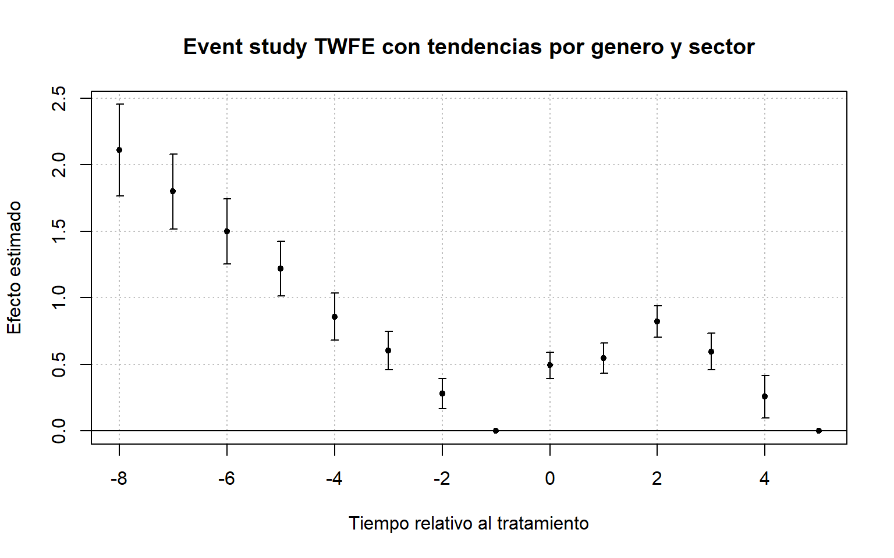
es_twfe_interact_tidy <- tidy(es_twfe_interact, conf.int = TRUE)
es_twfe_interact_tidy# Exportar:
# readr::write_csv(es_twfe_interact_tidy, "resultados/event_study_twfe_interacciones.csv")12 10. IPW: Inverse Probability Weighting
IPW no modela directamente el outcome. Estima la probabilidad de tratamiento condicional en covariables y pondera los controles para que se parezcan a los tratados.
Para ATT, los controles con características más parecidas a los tratados reciben más peso.
12.1 10.1 IPW en DiD 2x2 con DRDID
ipw_2x2 <- ipwdid(
yname = "y",
tname = "post",
idname = "id",
dname = "treated",
xformla = ~ x1 + x2,
data = df_2x2,
panel = TRUE
)
summary(ipw_2x2) Call:
ipwdid(yname = "y", tname = "post", idname = "id", dname = "treated",
xformla = ~x1 + x2, data = df_2x2, panel = TRUE)
------------------------------------------------------------------
IPW DID estimator for the ATT:
ATT Std. Error t value Pr(>|t|) [95% Conf. Interval]
2.1956 0.0893 24.5957 0 2.0206 2.3706
------------------------------------------------------------------
Estimator based on panel data.
Hajek-type IPW estimator (weights sum up to 1).
Propensity score est. method: maximum likelihood.
Analytical standard error.
------------------------------------------------------------------
See Sant'Anna and Zhao (2020) for details.12.2 10.2 IPW en diseño escalonado con did::att_gt()
att_ipw <- att_gt(
yname = "y",
tname = "year",
idname = "id",
gname = "G",
xformla = ~ x1_std + x2 + log_size0_std + gender + sector,
data = df,
panel = TRUE,
control_group = "notyettreated",
est_method = "ipw",
bstrap = TRUE,
biters = 999,
cband = TRUE
)
summary(att_ipw)
Call:
att_gt(yname = "y", tname = "year", idname = "id", gname = "G",
xformla = ~x1_std + x2 + log_size0_std + gender + sector,
data = df, panel = TRUE, control_group = "notyettreated",
bstrap = TRUE, cband = TRUE, biters = 999, est_method = "ipw")
Reference: Callaway, Brantly and Pedro H.C. Sant'Anna. "Difference-in-Differences with Multiple Time Periods." Journal of Econometrics, Vol. 225, No. 2, pp. 200-230, 2021. <https://doi.org/10.1016/j.jeconom.2020.12.001>, <https://arxiv.org/abs/1803.09015>
Group-Time Average Treatment Effects:
Group Time ATT(g,t) Std. Error [95% Simult. Conf. Band]
2015 2011 -0.0587 0.1098 -0.3985 0.2811
2015 2012 0.0337 0.1192 -0.3354 0.4027
2015 2013 0.0269 0.1071 -0.3048 0.3585
2015 2014 0.1024 0.1135 -0.2490 0.4537
2015 2015 0.5654 0.1031 0.2461 0.8847 *
2015 2016 1.1524 0.1120 0.8056 1.4992 *
2015 2017 1.6610 0.1146 1.3063 2.0158 *
2015 2018 1.7370 0.1197 1.3664 2.1075 *
2015 2019 1.6515 0.1209 1.2773 2.0257 *
2015 2020 1.7285 0.1170 1.3662 2.0909 *
2016 2011 0.0947 0.1088 -0.2423 0.4318
2016 2012 -0.1105 0.1089 -0.4476 0.2267
2016 2013 0.0286 0.1114 -0.3165 0.3736
2016 2014 -0.1152 0.1017 -0.4301 0.1997
2016 2015 0.0955 0.0924 -0.1905 0.3815
2016 2016 0.9632 0.1086 0.6268 1.2996 *
2016 2017 1.1470 0.1141 0.7938 1.5002 *
2016 2018 1.7283 0.1210 1.3539 2.1028 *
2016 2019 1.7419 0.1135 1.3907 2.0932 *
2016 2020 1.7560 0.1216 1.3795 2.1325 *
2017 2011 0.0140 0.1138 -0.3383 0.3663
2017 2012 -0.0065 0.1013 -0.3200 0.3071
2017 2013 0.0170 0.1041 -0.3053 0.3392
2017 2014 0.0909 0.1084 -0.2446 0.4263
2017 2015 -0.0954 0.0993 -0.4028 0.2121
2017 2016 -0.0318 0.1171 -0.3944 0.3307
2017 2017 0.8140 0.1245 0.4286 1.1995 *
2017 2018 1.1516 0.1353 0.7328 1.5704 *
2017 2019 1.6492 0.1327 1.2385 2.0600 *
2017 2020 1.7805 0.1243 1.3958 2.1652 *
2018 2011 0.0324 0.1231 -0.3486 0.4135
2018 2012 0.0003 0.1216 -0.3761 0.3767
2018 2013 0.0002 0.1223 -0.3783 0.3788
2018 2014 -0.1234 0.1147 -0.4785 0.2317
2018 2015 0.0411 0.1116 -0.3044 0.3866
2018 2016 0.1741 0.1310 -0.2315 0.5796
2018 2017 -0.1634 0.1314 -0.5701 0.2433
2018 2018 0.8566 0.1208 0.4825 1.2306 *
2018 2019 1.0765 0.1280 0.6802 1.4727 *
2018 2020 1.7602 0.1221 1.3820 2.1383 *
---
Signif. codes: `*' confidence band does not cover 0
P-value for pre-test of parallel trends assumption: 0.96791
Control Group: Not Yet Treated, Anticipation Periods: 0
Estimation Method: Inverse Probability Weighting12.3 10.3 Agregación IPW
agg_ipw_simple <- aggte(att_ipw, type = "simple")
summary(agg_ipw_simple)
Call:
aggte(MP = att_ipw, type = "simple")
Reference: Callaway, Brantly and Pedro H.C. Sant'Anna. "Difference-in-Differences with Multiple Time Periods." Journal of Econometrics, Vol. 225, No. 2, pp. 200-230, 2021. <https://doi.org/10.1016/j.jeconom.2020.12.001>, <https://arxiv.org/abs/1803.09015>
ATT Std. Error [ 95% Conf. Int.]
1.3881 0.049 1.2922 1.4841 *
---
Signif. codes: `*' confidence band does not cover 0
Control Group: Not Yet Treated, Anticipation Periods: 0
Estimation Method: Inverse Probability Weighting12.4 10.4 Event study IPW
agg_ipw_dynamic <- aggte(att_ipw, type = "dynamic")
summary(agg_ipw_dynamic)
Call:
aggte(MP = att_ipw, type = "dynamic")
Reference: Callaway, Brantly and Pedro H.C. Sant'Anna. "Difference-in-Differences with Multiple Time Periods." Journal of Econometrics, Vol. 225, No. 2, pp. 200-230, 2021. <https://doi.org/10.1016/j.jeconom.2020.12.001>, <https://arxiv.org/abs/1803.09015>
Overall summary of ATT's based on event-study/dynamic aggregation:
ATT Std. Error [ 95% Conf. Int.]
1.4702 0.0574 1.3576 1.5828 *
Dynamic Effects:
Event time Estimate Std. Error [95% Simult. Conf. Band]
-7 0.0324 0.1169 -0.3053 0.3702
-6 0.0076 0.0889 -0.2493 0.2644
-5 0.0316 0.0651 -0.1565 0.2198
-4 -0.0679 0.0630 -0.2499 0.1142
-3 0.0486 0.0612 -0.1280 0.2253
-2 -0.0090 0.0568 -0.1731 0.1551
-1 0.0057 0.0566 -0.1577 0.1691
0 0.8018 0.0556 0.6411 0.9625 *
1 1.1335 0.0602 0.9596 1.3074 *
2 1.6986 0.0639 1.5141 1.8830 *
3 1.7531 0.0695 1.5525 1.9538 *
4 1.7056 0.0920 1.4400 1.9713 *
5 1.7285 0.1207 1.3799 2.0772 *
---
Signif. codes: `*' confidence band does not cover 0
Control Group: Not Yet Treated, Anticipation Periods: 0
Estimation Method: Inverse Probability Weightingggdid(agg_ipw_dynamic) +
labs(title = "Event study IPW")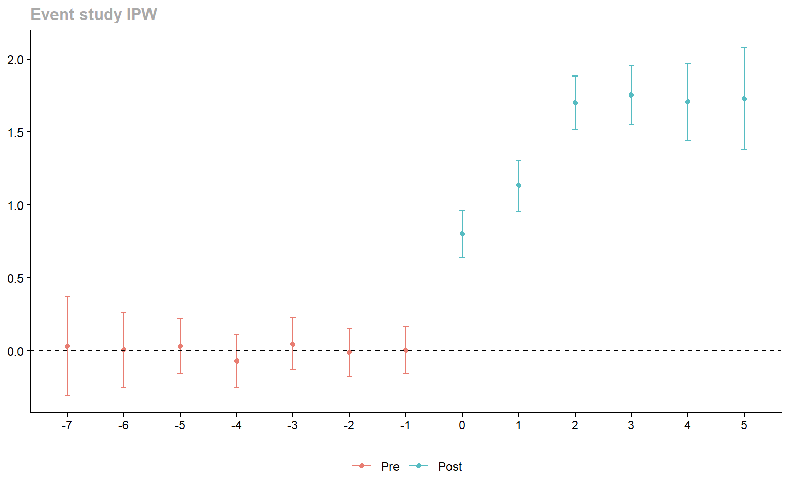
12.5 10.5 Tabla y exportación IPW
ipw_table <- tibble(
estimador = "IPW",
att = agg_ipw_simple$overall.att,
se = agg_ipw_simple$overall.se,
ci_low = att - 1.96 * se,
ci_high = att + 1.96 * se
)
ipw_table# Exportar tabla:
# readr::write_csv(ipw_table, "resultados/ipw_att_simple.csv")
# gt::gtsave(gt(ipw_table), "resultados/ipw_att_simple.html")
# Exportar grafico despues de imprimirlo:
# ggsave("resultados/ipw_event_study.png", width = 8, height = 5, dpi = 300)12.6 10.6 Qué comprobar en IPW
- Overlap del propensity score.
- Distribución de pesos.
- Balance tras ponderar.
- Sensibilidad a trimming.
- Si algunos controles tienen pesos enormes, el estimador puede depender de pocas observaciones.
13 11. RA: Regression Adjustment
RA estima el contrafactual de los tratados usando un modelo de outcome ajustado en los controles.
La idea es estimar:
\[ m_0(X)=E[\Delta Y\mid D=0,X] \]
Luego se predice qué habría ocurrido a los tratados en ausencia de tratamiento.
13.1 11.1 RA en 2x2 con DRDID
ra_2x2 <- ordid(
yname = "y",
tname = "post",
idname = "id",
dname = "treated",
xformla = ~ x1 + x2,
data = df_2x2,
panel = TRUE
)
summary(ra_2x2) Call:
ordid(yname = "y", tname = "post", idname = "id", dname = "treated",
xformla = ~x1 + x2, data = df_2x2, panel = TRUE)
------------------------------------------------------------------
Outcome-Regression DID estimator for the ATT:
ATT Std. Error t value Pr(>|t|) [95% Conf. Interval]
2.1956 0.0893 24.5968 0 2.0206 2.3705
------------------------------------------------------------------
Estimator based on panel data.
Outcome regression est. method: OLS.
Analytical standard error.
------------------------------------------------------------------
See Sant'Anna and Zhao (2020) for details.13.2 11.2 RA en diseño escalonado con did
att_ra <- att_gt(
yname = "y",
tname = "year",
idname = "id",
gname = "G",
xformla = ~ x1_std + x2 + log_size0_std + gender + sector,
data = df,
panel = TRUE,
control_group = "notyettreated",
est_method = "reg",
bstrap = TRUE,
biters = 999,
cband = TRUE
)
summary(att_ra)
Call:
att_gt(yname = "y", tname = "year", idname = "id", gname = "G",
xformla = ~x1_std + x2 + log_size0_std + gender + sector,
data = df, panel = TRUE, control_group = "notyettreated",
bstrap = TRUE, cband = TRUE, biters = 999, est_method = "reg")
Reference: Callaway, Brantly and Pedro H.C. Sant'Anna. "Difference-in-Differences with Multiple Time Periods." Journal of Econometrics, Vol. 225, No. 2, pp. 200-230, 2021. <https://doi.org/10.1016/j.jeconom.2020.12.001>, <https://arxiv.org/abs/1803.09015>
Group-Time Average Treatment Effects:
Group Time ATT(g,t) Std. Error [95% Simult. Conf. Band]
2015 2011 -0.0598 0.1064 -0.3996 0.2799
2015 2012 0.0348 0.1128 -0.3256 0.3952
2015 2013 0.0261 0.1079 -0.3185 0.3707
2015 2014 0.1027 0.1107 -0.2511 0.4565
2015 2015 0.5660 0.1047 0.2314 0.9005 *
2015 2016 1.1535 0.1160 0.7827 1.5242 *
2015 2017 1.6599 0.1159 1.2898 2.0301 *
2015 2018 1.7389 0.1235 1.3443 2.1335 *
2015 2019 1.6523 0.1259 1.2501 2.0545 *
2015 2020 1.7302 0.1248 1.3315 2.1289 *
2016 2011 0.0956 0.1086 -0.2514 0.4426
2016 2012 -0.1116 0.1115 -0.4678 0.2447
2016 2013 0.0294 0.1082 -0.3163 0.3752
2016 2014 -0.1136 0.1035 -0.4442 0.2170
2016 2015 0.0939 0.1061 -0.2452 0.4329
2016 2016 0.9623 0.1109 0.6080 1.3166 *
2016 2017 1.1459 0.1150 0.7784 1.5133 *
2016 2018 1.7278 0.1193 1.3466 2.1090 *
2016 2019 1.7388 0.1176 1.3631 2.1145 *
2016 2020 1.7547 0.1251 1.3551 2.1542 *
2017 2011 0.0143 0.1107 -0.3395 0.3681
2017 2012 -0.0060 0.1037 -0.3372 0.3253
2017 2013 0.0172 0.1133 -0.3448 0.3792
2017 2014 0.0935 0.1197 -0.2889 0.4759
2017 2015 -0.0969 0.1034 -0.4273 0.2335
2017 2016 -0.0314 0.1121 -0.3895 0.3267
2017 2017 0.8139 0.1104 0.4613 1.1665 *
2017 2018 1.1564 0.1337 0.7293 1.5836 *
2017 2019 1.6522 0.1307 1.2347 2.0696 *
2017 2020 1.7871 0.1258 1.3854 2.1889 *
2018 2011 0.0338 0.1177 -0.3422 0.4097
2018 2012 -0.0011 0.1144 -0.3665 0.3644
2018 2013 -0.0004 0.1260 -0.4030 0.4022
2018 2014 -0.1235 0.1243 -0.5206 0.2735
2018 2015 0.0410 0.1061 -0.2980 0.3801
2018 2016 0.1743 0.1213 -0.2134 0.5619
2018 2017 -0.1608 0.1210 -0.5472 0.2256
2018 2018 0.8587 0.1206 0.4733 1.2440 *
2018 2019 1.0771 0.1279 0.6685 1.4856 *
2018 2020 1.7632 0.1251 1.3636 2.1628 *
---
Signif. codes: `*' confidence band does not cover 0
P-value for pre-test of parallel trends assumption: 0.96652
Control Group: Not Yet Treated, Anticipation Periods: 0
Estimation Method: Outcome Regression13.3 11.3 Agregación RA
agg_ra_simple <- aggte(att_ra, type = "simple")
summary(agg_ra_simple)
Call:
aggte(MP = att_ra, type = "simple")
Reference: Callaway, Brantly and Pedro H.C. Sant'Anna. "Difference-in-Differences with Multiple Time Periods." Journal of Econometrics, Vol. 225, No. 2, pp. 200-230, 2021. <https://doi.org/10.1016/j.jeconom.2020.12.001>, <https://arxiv.org/abs/1803.09015>
ATT Std. Error [ 95% Conf. Int.]
1.3891 0.0517 1.2877 1.4905 *
---
Signif. codes: `*' confidence band does not cover 0
Control Group: Not Yet Treated, Anticipation Periods: 0
Estimation Method: Outcome Regression13.4 11.4 Event study RA
agg_ra_dynamic <- aggte(att_ra, type = "dynamic")
summary(agg_ra_dynamic)
Call:
aggte(MP = att_ra, type = "dynamic")
Reference: Callaway, Brantly and Pedro H.C. Sant'Anna. "Difference-in-Differences with Multiple Time Periods." Journal of Econometrics, Vol. 225, No. 2, pp. 200-230, 2021. <https://doi.org/10.1016/j.jeconom.2020.12.001>, <https://arxiv.org/abs/1803.09015>
Overall summary of ATT's based on event-study/dynamic aggregation:
ATT Std. Error [ 95% Conf. Int.]
1.4712 0.0561 1.3612 1.5811 *
Dynamic Effects:
Event time Estimate Std. Error [95% Simult. Conf. Band]
-7 0.0338 0.1181 -0.3060 0.3735
-6 0.0071 0.0813 -0.2268 0.2410
-5 0.0319 0.0661 -0.1581 0.2219
-4 -0.0684 0.0634 -0.2507 0.1139
-3 0.0498 0.0641 -0.1346 0.2342
-2 -0.0091 0.0538 -0.1638 0.1456
-1 0.0061 0.0532 -0.1469 0.1590
0 0.8021 0.0568 0.6386 0.9656 *
1 1.1348 0.0593 0.9643 1.3054 *
2 1.6996 0.0615 1.5226 1.8766 *
3 1.7549 0.0720 1.5479 1.9618 *
4 1.7054 0.0904 1.4454 1.9653 *
5 1.7302 0.1262 1.3672 2.0933 *
---
Signif. codes: `*' confidence band does not cover 0
Control Group: Not Yet Treated, Anticipation Periods: 0
Estimation Method: Outcome Regressionggdid(agg_ra_dynamic) +
labs(title = "Event study Regression Adjustment")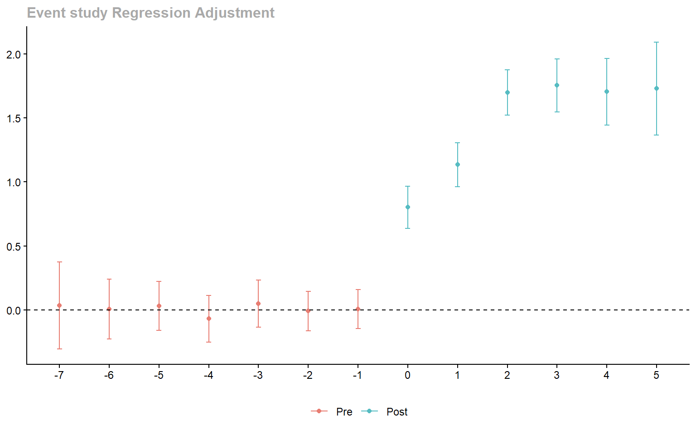
13.5 11.5 Tabla y exportación RA
ra_table <- tibble(
estimador = "RA",
att = agg_ra_simple$overall.att,
se = agg_ra_simple$overall.se,
ci_low = att - 1.96 * se,
ci_high = att + 1.96 * se
)
ra_table# Exportar:
# readr::write_csv(ra_table, "resultados/ra_att_simple.csv")
# gt::gtsave(gt(ra_table), "resultados/ra_att_simple.html")
# ggsave("resultados/ra_event_study.png", width = 8, height = 5, dpi = 300)13.6 11.6 Qué comprobar en RA
- Especificación del modelo de outcome.
- Si la relación entre outcome y covariables es lineal o no.
- Posible extrapolación para tratados fuera del soporte de controles.
- Robustez a añadir interacciones o transformaciones de covariables.
14 12. DR: Doubly Robust DiD
DR combina IPW y RA. Estima tanto:
- el propensity score
p(X); - el modelo de outcome
m0(X).
Tiene una propiedad importante: puede ser consistente si uno de los dos modelos auxiliares está bien especificado.
14.1 12.1 DR en 2x2 con DRDID
dr_2x2 <- drdid(
yname = "y",
tname = "post",
idname = "id",
dname = "treated",
xformla = ~ x1 + x2,
data = df_2x2,
panel = TRUE
)
summary(dr_2x2) Call:
drdid(yname = "y", tname = "post", idname = "id", dname = "treated",
xformla = ~x1 + x2, data = df_2x2, panel = TRUE)
------------------------------------------------------------------
Further improved locally efficient DR DID estimator for the ATT:
ATT Std. Error t value Pr(>|t|) [95% Conf. Interval]
2.1956 0.0893 24.5962 0 2.0206 2.3706
------------------------------------------------------------------
Estimator based on panel data.
Outcome regression est. method: weighted least squares.
Propensity score est. method: inverse prob. tilting.
Analytical standard error.
------------------------------------------------------------------
See Sant'Anna and Zhao (2020) for details.14.2 12.2 DR en diseño escalonado con did
att_dr <- att_gt(
yname = "y",
tname = "year",
idname = "id",
gname = "G",
xformla = ~ x1_std + x2 + log_size0_std + gender + sector,
data = df,
panel = TRUE,
control_group = "notyettreated",
est_method = "dr",
bstrap = TRUE,
biters = 999,
cband = TRUE
)
summary(att_dr)
Call:
att_gt(yname = "y", tname = "year", idname = "id", gname = "G",
xformla = ~x1_std + x2 + log_size0_std + gender + sector,
data = df, panel = TRUE, control_group = "notyettreated",
bstrap = TRUE, cband = TRUE, biters = 999, est_method = "dr")
Reference: Callaway, Brantly and Pedro H.C. Sant'Anna. "Difference-in-Differences with Multiple Time Periods." Journal of Econometrics, Vol. 225, No. 2, pp. 200-230, 2021. <https://doi.org/10.1016/j.jeconom.2020.12.001>, <https://arxiv.org/abs/1803.09015>
Group-Time Average Treatment Effects:
Group Time ATT(g,t) Std. Error [95% Simult. Conf. Band]
2015 2011 -0.0586 0.1223 -0.4503 0.3330
2015 2012 0.0339 0.1176 -0.3427 0.4106
2015 2013 0.0266 0.1094 -0.3237 0.3769
2015 2014 0.1020 0.1074 -0.2420 0.4459
2015 2015 0.5661 0.1113 0.2095 0.9227 *
2015 2016 1.1540 0.1178 0.7767 1.5313 *
2015 2017 1.6610 0.1121 1.3020 2.0201 *
2015 2018 1.7381 0.1186 1.3582 2.1180 *
2015 2019 1.6512 0.1264 1.2463 2.0561 *
2015 2020 1.7295 0.1164 1.3565 2.1024 *
2016 2011 0.0950 0.1066 -0.2466 0.4366
2016 2012 -0.1108 0.1019 -0.4374 0.2157
2016 2013 0.0290 0.1053 -0.3082 0.3661
2016 2014 -0.1153 0.1028 -0.4447 0.2141
2016 2015 0.0951 0.1077 -0.2498 0.4400
2016 2016 0.9631 0.1133 0.6002 1.3259 *
2016 2017 1.1459 0.1187 0.7656 1.5261 *
2016 2018 1.7294 0.1161 1.3575 2.1012 *
2016 2019 1.7406 0.1188 1.3601 2.1211 *
2016 2020 1.7551 0.1239 1.3581 2.1521 *
2017 2011 0.0137 0.1134 -0.3495 0.3768
2017 2012 -0.0060 0.1034 -0.3372 0.3253
2017 2013 0.0171 0.1127 -0.3438 0.3780
2017 2014 0.0904 0.1114 -0.2665 0.4473
2017 2015 -0.0952 0.1021 -0.4222 0.2317
2017 2016 -0.0316 0.1195 -0.4143 0.3512
2017 2017 0.8148 0.1205 0.4287 1.2008 *
2017 2018 1.1523 0.1402 0.7031 1.6015 *
2017 2019 1.6505 0.1359 1.2151 2.0858 *
2017 2020 1.7833 0.1189 1.4026 2.1641 *
2018 2011 0.0327 0.1259 -0.3704 0.4359
2018 2012 0.0003 0.1152 -0.3689 0.3694
2018 2013 0.0004 0.1284 -0.4109 0.4116
2018 2014 -0.1235 0.1250 -0.5241 0.2770
2018 2015 0.0413 0.1133 -0.3218 0.4044
2018 2016 0.1741 0.1224 -0.2181 0.5663
2018 2017 -0.1638 0.1254 -0.5656 0.2381
2018 2018 0.8591 0.1174 0.4828 1.2353 *
2018 2019 1.0776 0.1368 0.6394 1.5157 *
2018 2020 1.7633 0.1347 1.3317 2.1948 *
---
Signif. codes: `*' confidence band does not cover 0
P-value for pre-test of parallel trends assumption: 0.96782
Control Group: Not Yet Treated, Anticipation Periods: 0
Estimation Method: Doubly Robust14.3 12.3 Agregación DR
agg_dr_simple <- aggte(att_dr, type = "simple")
summary(agg_dr_simple)
Call:
aggte(MP = att_dr, type = "simple")
Reference: Callaway, Brantly and Pedro H.C. Sant'Anna. "Difference-in-Differences with Multiple Time Periods." Journal of Econometrics, Vol. 225, No. 2, pp. 200-230, 2021. <https://doi.org/10.1016/j.jeconom.2020.12.001>, <https://arxiv.org/abs/1803.09015>
ATT Std. Error [ 95% Conf. Int.]
1.3889 0.0485 1.2939 1.4839 *
---
Signif. codes: `*' confidence band does not cover 0
Control Group: Not Yet Treated, Anticipation Periods: 0
Estimation Method: Doubly Robust14.4 12.4 Event study DR
agg_dr_dynamic <- aggte(att_dr, type = "dynamic")
summary(agg_dr_dynamic)
Call:
aggte(MP = att_dr, type = "dynamic")
Reference: Callaway, Brantly and Pedro H.C. Sant'Anna. "Difference-in-Differences with Multiple Time Periods." Journal of Econometrics, Vol. 225, No. 2, pp. 200-230, 2021. <https://doi.org/10.1016/j.jeconom.2020.12.001>, <https://arxiv.org/abs/1803.09015>
Overall summary of ATT's based on event-study/dynamic aggregation:
ATT Std. Error [ 95% Conf. Int.]
1.4708 0.0523 1.3684 1.5733 *
Dynamic Effects:
Event time Estimate Std. Error [95% Simult. Conf. Band]
-7 0.0327 0.1213 -0.3188 0.3842
-6 0.0074 0.0832 -0.2338 0.2485
-5 0.0319 0.0681 -0.1655 0.2293
-4 -0.0679 0.0612 -0.2454 0.1095
-3 0.0487 0.0612 -0.1285 0.2260
-2 -0.0091 0.0596 -0.1818 0.1636
-1 0.0055 0.0563 -0.1578 0.1688
0 0.8027 0.0605 0.6275 0.9778 *
1 1.1340 0.0615 0.9559 1.3121 *
2 1.6999 0.0621 1.5199 1.8798 *
3 1.7540 0.0710 1.5482 1.9597 *
4 1.7051 0.0858 1.4565 1.9537 *
5 1.7295 0.1224 1.3747 2.0842 *
---
Signif. codes: `*' confidence band does not cover 0
Control Group: Not Yet Treated, Anticipation Periods: 0
Estimation Method: Doubly Robustggdid(agg_dr_dynamic) +
labs(title = "Event study Doubly Robust")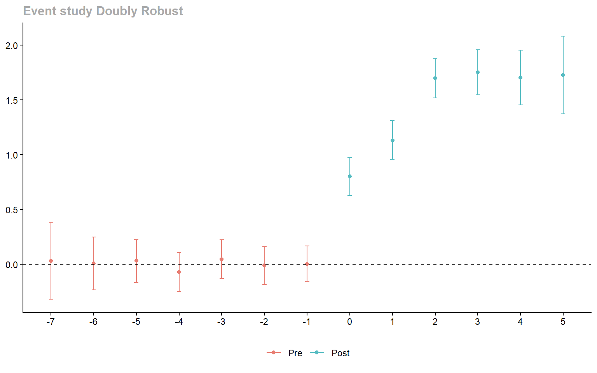
14.5 12.5 Tabla y exportación DR
dr_table <- tibble(
estimador = "DR",
att = agg_dr_simple$overall.att,
se = agg_dr_simple$overall.se,
ci_low = att - 1.96 * se,
ci_high = att + 1.96 * se
)
dr_table# Exportar:
# readr::write_csv(dr_table, "resultados/dr_att_simple.csv")
# gt::gtsave(gt(dr_table), "resultados/dr_att_simple.html")
# ggsave("resultados/dr_event_study.png", width = 8, height = 5, dpi = 300)15 13. Comparación conjunta: TWFE, IPW, RA y DR
15.1 13.1 Tabla resumen de estimadores agregados
comparison_table <- tibble(
estimador = c("TWFE", "TWFE + X", "TWFE + tendencias por genero/sector", "IPW", "RA", "DR"),
att = c(
coef(twfe_basic)["D"],
coef(twfe_x)["D"],
coef(twfe_interact)["D"],
agg_ipw_simple$overall.att,
agg_ra_simple$overall.att,
agg_dr_simple$overall.att
),
se = c(
se(twfe_basic)["D"],
se(twfe_x)["D"],
se(twfe_interact)["D"],
agg_ipw_simple$overall.se,
agg_ra_simple$overall.se,
agg_dr_simple$overall.se
)
) %>%
mutate(
ci_low = att - 1.96 * se,
ci_high = att + 1.96 * se
)
comparison_tablegt(comparison_table) %>%
fmt_number(columns = c(att, se, ci_low, ci_high), decimals = 3)| estimador | att | se | ci_low | ci_high |
|---|---|---|---|---|
| TWFE | 1.251 | 0.034 | 1.185 | 1.317 |
| TWFE + X | 1.251 | 0.034 | 1.185 | 1.317 |
| TWFE + tendencias por genero/sector | 1.247 | 0.033 | 1.182 | 1.312 |
| IPW | 1.388 | 0.049 | 1.292 | 1.484 |
| RA | 1.389 | 0.052 | 1.288 | 1.491 |
| DR | 1.389 | 0.048 | 1.294 | 1.484 |
# Exportar:
# readr::write_csv(comparison_table, "resultados/comparacion_estimadores.csv")
# gt::gtsave(gt(comparison_table), "resultados/comparacion_estimadores.html")15.2 13.2 Gráfico de comparación
comparison_table %>%
ggplot(aes(x = reorder(estimador, att), y = att)) +
geom_point(size = 3) +
geom_errorbar(aes(ymin = ci_low, ymax = ci_high), width = 0.15) +
coord_flip() +
labs(x = NULL, y = "ATT estimado",
title = "Comparacion de estimadores") +
theme_minimal()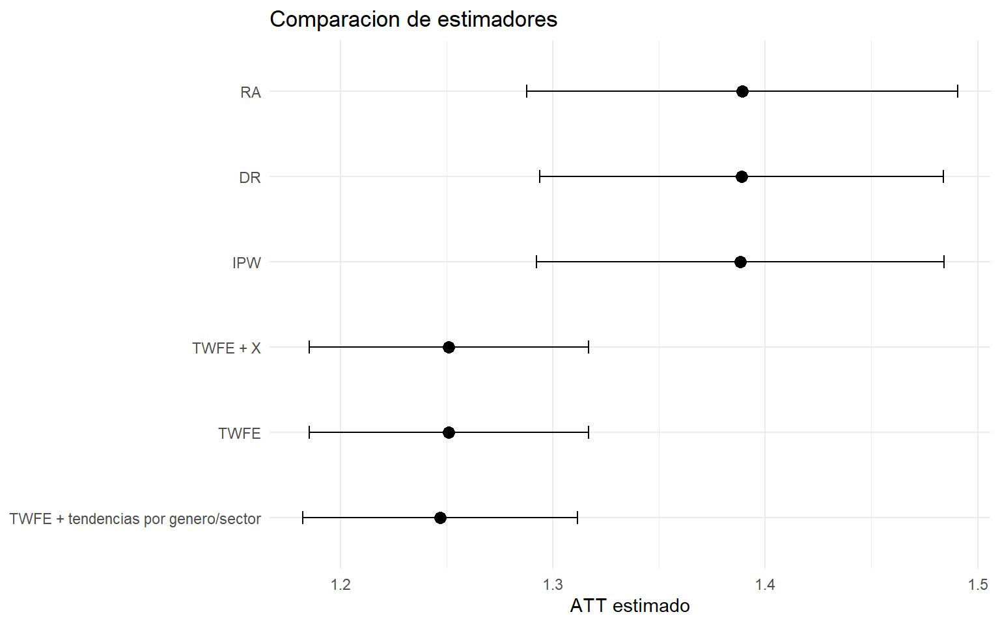
# Exportar:
# ggsave("resultados/comparacion_estimadores.png", width = 8, height = 5, dpi = 300)15.3 13.3 Comparar event studies IPW, RA y DR en una tabla
# Los objetos dynamic contienen efectos por tiempo relativo.
# Los nombres internos pueden variar por version, por eso imprimimos su estructura.
str(agg_dr_dynamic)List of 13
$ overall.att : num 1.47
$ overall.se : num 0.0523
$ type : chr "dynamic"
$ egt : num [1:13] -7 -6 -5 -4 -3 -2 -1 0 1 2 ...
$ att.egt : num [1:13] 0.03272 0.00738 0.03191 -0.06795 0.04874 ...
$ se.egt : num [1:13] 0.1213 0.0832 0.0681 0.0612 0.0612 ...
$ crit.val.egt: Named num 2.9
..- attr(*, "names")= chr "95%"
$ inf.function:List of 2
..$ dynamic.inf.func.e: num [1:1200, 1:13] 2.048 -0.455 2.445 -0.988 1.157 ...
..$ dynamic.inf.func : num [1:1200] -2.8289 0.0554 -3.0855 0.2448 0.8089 ...
$ min_e : num -Inf
$ max_e : num Inf
$ balance_e : NULL
$ call : language aggte(MP = att_dr, type = "dynamic")
$ DIDparams :List of 37
..$ yname : chr "y"
..$ tname : chr "year"
..$ idname : chr "id"
..$ gname : chr "G"
..$ xformla :Class 'formula' language ~x1_std + x2 + log_size0_std + gender + sector
.. .. ..- attr(*, ".Environment")=<environment: R_GlobalEnv>
..$ panel : logi TRUE
..$ est_method : chr "dr"
..$ bstrap : logi TRUE
..$ biters : num 999
..$ cband : logi TRUE
..$ anticipation : num 0
..$ control_group : chr "notyettreated"
..$ allow_unbalanced_panel : logi FALSE
..$ weightsname : NULL
..$ base_period : chr "varying"
..$ cores : num 1
..$ pl : logi FALSE
..$ print_details : logi FALSE
..$ faster_mode : logi TRUE
..$ alp : num 0.05
..$ true_repeated_cross_sections: logi FALSE
..$ time_periods_count : int 11
..$ time_periods : int [1:11] 2010 2011 2012 2013 2014 2015 2016 2017 2018 2019 ...
..$ treated_groups_count : int 4
..$ treated_groups : num [1:4] 2015 2016 2017 2018
..$ id_count : int 1200
..$ outcomes_tensor :List of 11
.. ..$ : num [1:1200] 0.421 -0.206 -1.098 -2.12 2.207 ...
.. ..$ : num [1:1200] -1.234 0.244 -2.817 -0.816 1.235 ...
.. ..$ : num [1:1200] 0.46872 0.00203 -2.00884 0.18715 -0.70781 ...
.. ..$ : num [1:1200] -0.261 0.79 -2.399 -0.887 0.474 ...
.. ..$ : num [1:1200] 1.333 1.796 -0.661 -0.694 0.679 ...
.. ..$ : num [1:1200] 0.477 1.519 1.133 0.626 2.796 ...
.. ..$ : num [1:1200] 2.593 4.654 -0.208 1.589 2.129 ...
.. ..$ : num [1:1200] 1.58 3.74 1.66 1.79 3.54 ...
.. ..$ : num [1:1200] 3.41 4.71 2.14 2.45 3.37 ...
.. ..$ : num [1:1200] 2.699 3.144 0.832 1.29 3.073 ...
.. ..$ : num [1:1200] 2.9253 4.8313 -0.0368 2.1084 4.3376 ...
..$ data :Classes 'data.table' and 'data.frame': 13200 obs. of 10 variables:
.. ..$ id : int [1:13200] 11 20 23 27 44 47 50 52 54 62 ...
.. ..$ year : int [1:13200] 2010 2010 2010 2010 2010 2010 2010 2010 2010 2010 ...
.. ..$ G : num [1:13200] 2015 2015 2015 2015 2015 ...
.. ..$ y : num [1:13200] 0.421 -0.206 -1.098 -2.12 2.207 ...
.. ..$ x1_std : num [1:13200] -0.73 -0.162 -0.448 -1.757 0.792 ...
.. ..$ x2 : int [1:13200] 1 0 0 1 1 1 0 0 0 0 ...
.. ..$ log_size0_std: num [1:13200] 0.741 -0.975 -1.428 -0.901 -1.997 ...
.. ..$ gender : chr [1:13200] "Hombre" "Hombre" "Mujer" "Hombre" ...
.. ..$ sector : chr [1:13200] "Servicios" "Construccion" "Servicios" "Servicios" ...
.. ..$ weights : num [1:13200] 1 1 1 1 1 1 1 1 1 1 ...
.. ..- attr(*, ".internal.selfref")=<externalptr>
..$ time_invariant_data :Classes 'data.table' and 'data.frame': 1200 obs. of 10 variables:
.. ..$ id : int [1:1200] 11 20 23 27 44 47 50 52 54 62 ...
.. ..$ year : int [1:1200] 2010 2010 2010 2010 2010 2010 2010 2010 2010 2010 ...
.. ..$ G : num [1:1200] 2015 2015 2015 2015 2015 ...
.. ..$ y : num [1:1200] 0.421 -0.206 -1.098 -2.12 2.207 ...
.. ..$ x1_std : num [1:1200] -0.73 -0.162 -0.448 -1.757 0.792 ...
.. ..$ x2 : int [1:1200] 1 0 0 1 1 1 0 0 0 0 ...
.. ..$ log_size0_std: num [1:1200] 0.741 -0.975 -1.428 -0.901 -1.997 ...
.. ..$ gender : chr [1:1200] "Hombre" "Hombre" "Mujer" "Hombre" ...
.. ..$ sector : chr [1:1200] "Servicios" "Construccion" "Servicios" "Servicios" ...
.. ..$ weights : num [1:1200] 1 1 1 1 1 1 1 1 1 1 ...
.. ..- attr(*, ".internal.selfref")=<externalptr>
..$ cohort_counts :Classes 'data.table' and 'data.frame': 5 obs. of 2 variables:
.. ..$ cohort : num [1:5] 2015 2016 2017 2018 Inf
.. ..$ cohort_size: int [1:5] 198 213 204 181 404
.. ..- attr(*, ".internal.selfref")=<externalptr>
..$ period_counts :Classes 'data.table' and 'data.frame': 1 obs. of 2 variables:
.. ..$ period : int 2010
.. ..$ period_size: int 1200
.. ..- attr(*, ".internal.selfref")=<externalptr>
..$ crosstable_counts :Classes 'data.table' and 'data.frame': 1 obs. of 6 variables:
.. ..$ period: int 2010
.. ..$ 2015 : int 198
.. ..$ 2016 : int 213
.. ..$ 2017 : int 204
.. ..$ 2018 : int 181
.. ..$ Inf : int 404
.. ..- attr(*, ".internal.selfref")=<externalptr>
.. ..- attr(*, "sorted")= chr "period"
..$ covariates_tensor :List of 11
.. ..$ : num [1:1200, 1:7] 1 1 1 1 1 1 1 1 1 1 ...
.. .. ..- attr(*, "dimnames")=List of 2
.. .. .. ..$ : chr [1:1200] "1" "2" "3" "4" ...
.. .. .. ..$ : chr [1:7] "(Intercept)" "x1_std" "x2" "log_size0_std" ...
.. .. ..- attr(*, "assign")= int [1:7] 0 1 2 3 4 5 5
.. .. ..- attr(*, "contrasts")=List of 2
.. .. .. ..$ gender: chr "contr.treatment"
.. .. .. ..$ sector: chr "contr.treatment"
.. ..$ : num [1:1200, 1:7] 1 1 1 1 1 1 1 1 1 1 ...
.. .. ..- attr(*, "dimnames")=List of 2
.. .. .. ..$ : chr [1:1200] "1" "2" "3" "4" ...
.. .. .. ..$ : chr [1:7] "(Intercept)" "x1_std" "x2" "log_size0_std" ...
.. .. ..- attr(*, "assign")= int [1:7] 0 1 2 3 4 5 5
.. .. ..- attr(*, "contrasts")=List of 2
.. .. .. ..$ gender: chr "contr.treatment"
.. .. .. ..$ sector: chr "contr.treatment"
.. ..$ : num [1:1200, 1:7] 1 1 1 1 1 1 1 1 1 1 ...
.. .. ..- attr(*, "dimnames")=List of 2
.. .. .. ..$ : chr [1:1200] "1" "2" "3" "4" ...
.. .. .. ..$ : chr [1:7] "(Intercept)" "x1_std" "x2" "log_size0_std" ...
.. .. ..- attr(*, "assign")= int [1:7] 0 1 2 3 4 5 5
.. .. ..- attr(*, "contrasts")=List of 2
.. .. .. ..$ gender: chr "contr.treatment"
.. .. .. ..$ sector: chr "contr.treatment"
.. ..$ : num [1:1200, 1:7] 1 1 1 1 1 1 1 1 1 1 ...
.. .. ..- attr(*, "dimnames")=List of 2
.. .. .. ..$ : chr [1:1200] "1" "2" "3" "4" ...
.. .. .. ..$ : chr [1:7] "(Intercept)" "x1_std" "x2" "log_size0_std" ...
.. .. ..- attr(*, "assign")= int [1:7] 0 1 2 3 4 5 5
.. .. ..- attr(*, "contrasts")=List of 2
.. .. .. ..$ gender: chr "contr.treatment"
.. .. .. ..$ sector: chr "contr.treatment"
.. ..$ : num [1:1200, 1:7] 1 1 1 1 1 1 1 1 1 1 ...
.. .. ..- attr(*, "dimnames")=List of 2
.. .. .. ..$ : chr [1:1200] "1" "2" "3" "4" ...
.. .. .. ..$ : chr [1:7] "(Intercept)" "x1_std" "x2" "log_size0_std" ...
.. .. ..- attr(*, "assign")= int [1:7] 0 1 2 3 4 5 5
.. .. ..- attr(*, "contrasts")=List of 2
.. .. .. ..$ gender: chr "contr.treatment"
.. .. .. ..$ sector: chr "contr.treatment"
.. ..$ : num [1:1200, 1:7] 1 1 1 1 1 1 1 1 1 1 ...
.. .. ..- attr(*, "dimnames")=List of 2
.. .. .. ..$ : chr [1:1200] "1" "2" "3" "4" ...
.. .. .. ..$ : chr [1:7] "(Intercept)" "x1_std" "x2" "log_size0_std" ...
.. .. ..- attr(*, "assign")= int [1:7] 0 1 2 3 4 5 5
.. .. ..- attr(*, "contrasts")=List of 2
.. .. .. ..$ gender: chr "contr.treatment"
.. .. .. ..$ sector: chr "contr.treatment"
.. ..$ : num [1:1200, 1:7] 1 1 1 1 1 1 1 1 1 1 ...
.. .. ..- attr(*, "dimnames")=List of 2
.. .. .. ..$ : chr [1:1200] "1" "2" "3" "4" ...
.. .. .. ..$ : chr [1:7] "(Intercept)" "x1_std" "x2" "log_size0_std" ...
.. .. ..- attr(*, "assign")= int [1:7] 0 1 2 3 4 5 5
.. .. ..- attr(*, "contrasts")=List of 2
.. .. .. ..$ gender: chr "contr.treatment"
.. .. .. ..$ sector: chr "contr.treatment"
.. ..$ : num [1:1200, 1:7] 1 1 1 1 1 1 1 1 1 1 ...
.. .. ..- attr(*, "dimnames")=List of 2
.. .. .. ..$ : chr [1:1200] "1" "2" "3" "4" ...
.. .. .. ..$ : chr [1:7] "(Intercept)" "x1_std" "x2" "log_size0_std" ...
.. .. ..- attr(*, "assign")= int [1:7] 0 1 2 3 4 5 5
.. .. ..- attr(*, "contrasts")=List of 2
.. .. .. ..$ gender: chr "contr.treatment"
.. .. .. ..$ sector: chr "contr.treatment"
.. ..$ : num [1:1200, 1:7] 1 1 1 1 1 1 1 1 1 1 ...
.. .. ..- attr(*, "dimnames")=List of 2
.. .. .. ..$ : chr [1:1200] "1" "2" "3" "4" ...
.. .. .. ..$ : chr [1:7] "(Intercept)" "x1_std" "x2" "log_size0_std" ...
.. .. ..- attr(*, "assign")= int [1:7] 0 1 2 3 4 5 5
.. .. ..- attr(*, "contrasts")=List of 2
.. .. .. ..$ gender: chr "contr.treatment"
.. .. .. ..$ sector: chr "contr.treatment"
.. ..$ : num [1:1200, 1:7] 1 1 1 1 1 1 1 1 1 1 ...
.. .. ..- attr(*, "dimnames")=List of 2
.. .. .. ..$ : chr [1:1200] "1" "2" "3" "4" ...
.. .. .. ..$ : chr [1:7] "(Intercept)" "x1_std" "x2" "log_size0_std" ...
.. .. ..- attr(*, "assign")= int [1:7] 0 1 2 3 4 5 5
.. .. ..- attr(*, "contrasts")=List of 2
.. .. .. ..$ gender: chr "contr.treatment"
.. .. .. ..$ sector: chr "contr.treatment"
.. ..$ : num [1:1200, 1:7] 1 1 1 1 1 1 1 1 1 1 ...
.. .. ..- attr(*, "dimnames")=List of 2
.. .. .. ..$ : chr [1:1200] "1" "2" "3" "4" ...
.. .. .. ..$ : chr [1:7] "(Intercept)" "x1_std" "x2" "log_size0_std" ...
.. .. ..- attr(*, "assign")= int [1:7] 0 1 2 3 4 5 5
.. .. ..- attr(*, "contrasts")=List of 2
.. .. .. ..$ gender: chr "contr.treatment"
.. .. .. ..$ sector: chr "contr.treatment"
..$ covariates_matrix : NULL
..$ cluster_vector : logi NA
..$ weights_vector : Named num [1:1200] 1 1 1 1 1 1 1 1 1 1 ...
.. ..- attr(*, "names")= chr [1:1200] "weights1" "weights2" "weights3" "weights4" ...
..$ call : language att_gt(yname = "y", tname = "year", idname = "id", gname = "G", xformla = ~x1_std + x2 + log_size0_std + gen| __truncated__ ...
..- attr(*, "class")= chr "DIDparams"
- attr(*, "class")= chr "AGGTEobj"En muchas versiones, los efectos dinámicos están en att.egt, los errores en se.egt y el tiempo relativo en egt.
dynamic_comparison <- bind_rows(
tibble(method = "IPW", event_time = agg_ipw_dynamic$egt,
att = agg_ipw_dynamic$att.egt, se = agg_ipw_dynamic$se.egt),
tibble(method = "RA", event_time = agg_ra_dynamic$egt,
att = agg_ra_dynamic$att.egt, se = agg_ra_dynamic$se.egt),
tibble(method = "DR", event_time = agg_dr_dynamic$egt,
att = agg_dr_dynamic$att.egt, se = agg_dr_dynamic$se.egt)
) %>%
mutate(
ci_low = att - 1.96 * se,
ci_high = att + 1.96 * se
)
dynamic_comparison# Exportar:
# readr::write_csv(dynamic_comparison, "resultados/event_studies_ipw_ra_dr.csv")15.4 13.4 Comparar visualmente event studies IPW, RA y DR
dynamic_comparison %>%
ggplot(aes(x = event_time, y = att, color = method)) +
geom_hline(yintercept = 0, linetype = "dashed") +
geom_vline(xintercept = -1, linetype = "dotted") +
geom_point() +
geom_line() +
geom_errorbar(aes(ymin = ci_low, ymax = ci_high), width = 0.1, alpha = 0.6) +
labs(x = "Tiempo relativo al tratamiento", y = "ATT(g,t) agregado",
color = "Metodo",
title = "Comparacion de event studies: IPW, RA y DR") +
theme_minimal()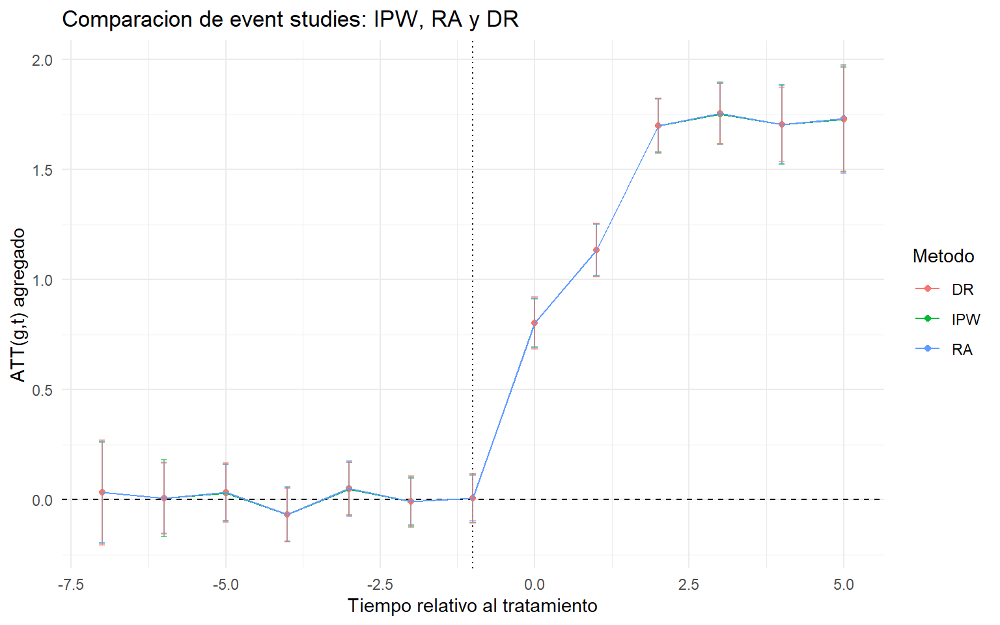
# Exportar:
# ggsave("resultados/event_studies_ipw_ra_dr.png", width = 8, height = 5, dpi = 300)16 14. Event studies modernos con Sun & Abraham
Otra alternativa habitual para diseños escalonados es usar fixest::sunab().
es_sa <- feols(
y ~ sunab(G, year) | id + year,
data = df,
cluster = ~id
)
summary(es_sa)OLS estimation, Dep. Var.: y
Observations: 13,200
Fixed-effects: id: 1,200, year: 11
Standard-errors: Clustered (id)
Estimate Std. Error t value Pr(>|t|)
year::-8 -0.025525 0.121439 -0.210185 0.83356
year::-7 -0.032893 0.086043 -0.382283 0.70232
year::-6 -0.030559 0.072386 -0.422165 0.67298
year::-5 -0.017240 0.061744 -0.279209 0.78013
year::-4 -0.070631 0.058837 -1.200440 0.23021
year::-3 -0.037596 0.056225 -0.668675 0.50383
year::-2 -0.023500 0.051564 -0.455755 0.64865
year::0 0.800216 0.052347 15.286627 < 2.2e-16 ***
year::1 1.150059 0.056855 20.227812 < 2.2e-16 ***
year::2 1.700790 0.059772 28.454828 < 2.2e-16 ***
year::3 1.763365 0.070364 25.060558 < 2.2e-16 ***
year::4 1.710113 0.087649 19.510830 < 2.2e-16 ***
year::5 1.729883 0.120527 14.352606 < 2.2e-16 ***
---
Signif. codes: 0 '***' 0.001 '**' 0.01 '*' 0.05 '.' 0.1 ' ' 1
RMSE: 0.957342 Adj. R2: 0.710868
Within R2: 0.136866iplot(es_sa,
xlab = "Tiempo relativo al tratamiento",
ylab = "Efecto estimado",
main = "Event study Sun & Abraham")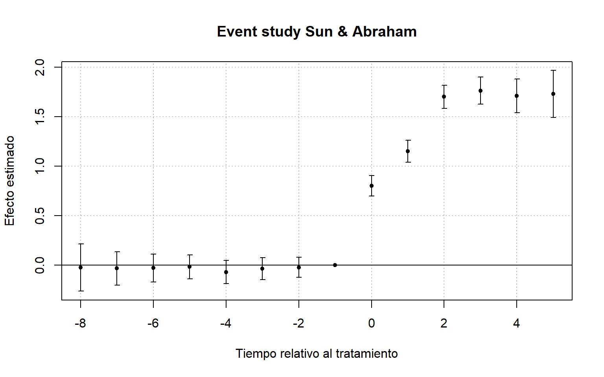
16.1 14.1 Sun & Abraham con covariables o tendencias específicas
es_sa_x <- feols(
y ~ sunab(G, year) + i(year, gender) + i(year, sector) | id + year,
data = df,
cluster = ~id
)
summary(es_sa_x)OLS estimation, Dep. Var.: y
Observations: 13,200
Fixed-effects: id: 1,200, year: 11
Standard-errors: Clustered (id)
Estimate Std. Error t value Pr(>|t|)
year::-8 -0.019338 0.121796 -0.158776 8.7387e-01
year::-7 -0.030297 0.085775 -0.353211 7.2399e-01
year::-6 -0.024313 0.072252 -0.336499 7.3655e-01
year::-5 -0.016335 0.061825 -0.264209 7.9166e-01
year::-4 -0.070216 0.058808 -1.193992 2.3272e-01
year::-3 -0.035350 0.056219 -0.628794 5.2960e-01
year::-2 -0.020232 0.051494 -0.392897 6.9447e-01
year::0 0.799122 0.052385 15.254654 < 2.2e-16 ***
year::1 1.148891 0.056840 20.212801 < 2.2e-16 ***
year::2 1.696519 0.059536 28.495456 < 2.2e-16 ***
year::3 1.756748 0.070375 24.962566 < 2.2e-16 ***
year::4 1.709781 0.086886 19.678328 < 2.2e-16 ***
year::5 1.734703 0.120938 14.343747 < 2.2e-16 ***
year::2010:gender::Mujer -0.271457 0.082020 -3.309632 9.6196e-04 ***
year::2011:gender::Hombre 0.334385 0.084367 3.963476 7.8229e-05 ***
year::2012:gender::Hombre 0.199008 0.080942 2.458655 1.4086e-02 *
year::2013:gender::Hombre 0.156095 0.084477 1.847770 6.4882e-02 .
year::2014:gender::Hombre 0.182493 0.080858 2.256950 2.4191e-02 *
year::2015:gender::Hombre 0.255730 0.083620 3.058245 2.2757e-03 **
year::2016:gender::Hombre 0.237801 0.083454 2.849485 4.4539e-03 **
year::2017:gender::Hombre 0.060488 0.081657 0.740765 4.5898e-01
year::2018:gender::Hombre 0.102374 0.080579 1.270481 2.0416e-01
year::2019:gender::Hombre 0.051141 0.080853 0.632515 5.2717e-01
year::2010:sector::Industria -0.364594 0.102395 -3.560649 3.8443e-04 ***
year::2010:sector::Servicios -0.292134 0.115146 -2.537066 1.1304e-02 *
year::2011:sector::Construccion 0.177432 0.112146 1.582150 1.1388e-01
year::2011:sector::Industria -0.108643 0.065821 -1.650576 9.9087e-02 .
year::2012:sector::Construccion 0.202449 0.108023 1.874137 6.1155e-02 .
year::2012:sector::Industria 0.007324 0.065588 0.111670 9.1110e-01
year::2013:sector::Construccion 0.147820 0.114087 1.295684 1.9533e-01
year::2013:sector::Industria 0.003723 0.068435 0.054404 9.5662e-01
year::2014:sector::Construccion 0.120556 0.107523 1.121216 2.6242e-01
year::2014:sector::Industria -0.113113 0.064065 -1.765611 7.7716e-02 .
year::2015:sector::Construccion 0.062868 0.104788 0.599955 5.4865e-01
year::2015:sector::Industria -0.009521 0.068646 -0.138704 8.8971e-01
year::2016:sector::Construccion 0.073094 0.107453 0.680242 4.9648e-01
year::2016:sector::Industria 0.073502 0.066878 1.099044 2.7197e-01
year::2017:sector::Construccion 0.050420 0.108253 0.465757 6.4147e-01
year::2017:sector::Industria 0.108719 0.064564 1.683883 9.2465e-02 .
year::2018:sector::Construccion -0.043035 0.110192 -0.390550 6.9620e-01
year::2018:sector::Industria 0.147507 0.066538 2.216868 2.6819e-02 *
year::2019:sector::Construccion -0.000799 0.104396 -0.007653 9.9389e-01
year::2019:sector::Industria 0.166122 0.067814 2.449663 1.4441e-02 *
year::2020:sector::Industria 0.318146 0.062373 5.100733 3.9298e-07 ***
... 22 variables were removed because of collinearity (year::2011:gender::Mujer, year::2012:gender::Mujer and 20 others [full set in $collin.var])
---
Signif. codes: 0 '***' 0.001 '**' 0.01 '*' 0.05 '.' 0.1 ' ' 1
RMSE: 0.953126 Adj. R2: 0.712663
Within R2: 0.14445 iplot(es_sa_x,
xlab = "Tiempo relativo al tratamiento",
ylab = "Efecto estimado",
main = "Event study Sun & Abraham con tendencias por genero/sector")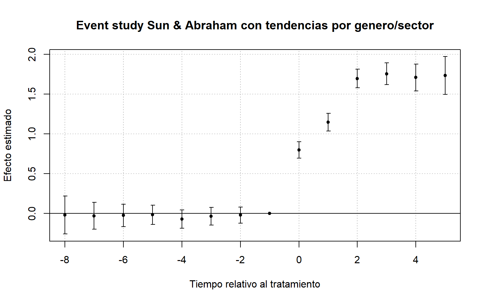
16.2 14.2 Tabla y exportación Sun & Abraham
modelsummary(
list(
"Sun-Abraham" = es_sa,
"Sun-Abraham + tendencias X" = es_sa_x
),
statistic = "({std.error})",
stars = TRUE,
output = "gt"
)| Sun-Abraham | Sun-Abraham + tendencias X | |
|---|---|---|
| year = -8 | -0.026 | -0.019 |
| (0.121) | (0.122) | |
| year = -7 | -0.033 | -0.030 |
| (0.086) | (0.086) | |
| year = -6 | -0.031 | -0.024 |
| (0.072) | (0.072) | |
| year = -5 | -0.017 | -0.016 |
| (0.062) | (0.062) | |
| year = -4 | -0.071 | -0.070 |
| (0.059) | (0.059) | |
| year = -3 | -0.038 | -0.035 |
| (0.056) | (0.056) | |
| year = -2 | -0.024 | -0.020 |
| (0.052) | (0.051) | |
| year = 0 | 0.800*** | 0.799*** |
| (0.052) | (0.052) | |
| year = 1 | 1.150*** | 1.149*** |
| (0.057) | (0.057) | |
| year = 2 | 1.701*** | 1.697*** |
| (0.060) | (0.060) | |
| year = 3 | 1.763*** | 1.757*** |
| (0.070) | (0.070) | |
| year = 4 | 1.710*** | 1.710*** |
| (0.088) | (0.087) | |
| year = 5 | 1.730*** | 1.735*** |
| (0.121) | (0.121) | |
| year = 2010 × gender = Mujer | -0.271*** | |
| (0.082) | ||
| year = 2011 × gender = Hombre | 0.334*** | |
| (0.084) | ||
| year = 2012 × gender = Hombre | 0.199* | |
| (0.081) | ||
| year = 2013 × gender = Hombre | 0.156+ | |
| (0.084) | ||
| year = 2014 × gender = Hombre | 0.182* | |
| (0.081) | ||
| year = 2015 × gender = Hombre | 0.256** | |
| (0.084) | ||
| year = 2016 × gender = Hombre | 0.238** | |
| (0.083) | ||
| year = 2017 × gender = Hombre | 0.060 | |
| (0.082) | ||
| year = 2018 × gender = Hombre | 0.102 | |
| (0.081) | ||
| year = 2019 × gender = Hombre | 0.051 | |
| (0.081) | ||
| year = 2010 × sector = Industria | -0.365*** | |
| (0.102) | ||
| year = 2010 × sector = Servicios | -0.292* | |
| (0.115) | ||
| year = 2011 × sector = Construccion | 0.177 | |
| (0.112) | ||
| year = 2011 × sector = Industria | -0.109+ | |
| (0.066) | ||
| year = 2012 × sector = Construccion | 0.202+ | |
| (0.108) | ||
| year = 2012 × sector = Industria | 0.007 | |
| (0.066) | ||
| year = 2013 × sector = Construccion | 0.148 | |
| (0.114) | ||
| year = 2013 × sector = Industria | 0.004 | |
| (0.068) | ||
| year = 2014 × sector = Construccion | 0.121 | |
| (0.108) | ||
| year = 2014 × sector = Industria | -0.113+ | |
| (0.064) | ||
| year = 2015 × sector = Construccion | 0.063 | |
| (0.105) | ||
| year = 2015 × sector = Industria | -0.010 | |
| (0.069) | ||
| year = 2016 × sector = Construccion | 0.073 | |
| (0.107) | ||
| year = 2016 × sector = Industria | 0.074 | |
| (0.067) | ||
| year = 2017 × sector = Construccion | 0.050 | |
| (0.108) | ||
| year = 2017 × sector = Industria | 0.109+ | |
| (0.065) | ||
| year = 2018 × sector = Construccion | -0.043 | |
| (0.110) | ||
| year = 2018 × sector = Industria | 0.148* | |
| (0.067) | ||
| year = 2019 × sector = Construccion | -0.001 | |
| (0.104) | ||
| year = 2019 × sector = Industria | 0.166* | |
| (0.068) | ||
| year = 2020 × sector = Industria | 0.318*** | |
| (0.062) | ||
| Num.Obs. | 13200 | 13200 |
| R2 | 0.738 | 0.741 |
| R2 Adj. | 0.711 | 0.713 |
| R2 Within | 0.137 | 0.144 |
| R2 Within Adj. | 0.136 | 0.141 |
| AIC | 38809.1 | 38754.6 |
| BIC | 48169.0 | 48346.7 |
| RMSE | 0.96 | 0.95 |
| Std.Errors | by: id | by: id |
| FE: id | X | X |
| FE: year | X | X |
| + p < 0.1, * p < 0.05, ** p < 0.01, *** p < 0.001 | ||
# Exportar:
# modelsummary(list("Sun-Abraham" = es_sa,
# "Sun-Abraham + tendencias X" = es_sa_x),
# output = "resultados/sunab_event_study.html")17 15. Heterogeneidad del efecto tratamiento
El efecto tratamiento puede variar por género, sector, tamaño inicial, cohorte o tiempo desde tratamiento.
17.1 15.1 Heterogeneidad por subgrupos con did
Estimamos el mismo modelo por separado para cada subgrupo.
17.1.1 Género
att_dr_mujer <- att_gt(
yname = "y",
tname = "year",
idname = "id",
gname = "G",
xformla = ~ x1_std + x2 + log_size0_std + sector,
data = df %>% filter(gender == "Mujer"),
panel = TRUE,
control_group = "notyettreated",
est_method = "dr",
bstrap = TRUE,
biters = 999,
cband = TRUE
)
agg_dr_mujer <- aggte(att_dr_mujer, type = "simple")
summary(agg_dr_mujer)
Call:
aggte(MP = att_dr_mujer, type = "simple")
Reference: Callaway, Brantly and Pedro H.C. Sant'Anna. "Difference-in-Differences with Multiple Time Periods." Journal of Econometrics, Vol. 225, No. 2, pp. 200-230, 2021. <https://doi.org/10.1016/j.jeconom.2020.12.001>, <https://arxiv.org/abs/1803.09015>
ATT Std. Error [ 95% Conf. Int.]
1.4364 0.0719 1.2955 1.5773 *
---
Signif. codes: `*' confidence band does not cover 0
Control Group: Not Yet Treated, Anticipation Periods: 0
Estimation Method: Doubly Robustatt_dr_hombre <- att_gt(
yname = "y",
tname = "year",
idname = "id",
gname = "G",
xformla = ~ x1_std + x2 + log_size0_std + sector,
data = df %>% filter(gender == "Hombre"),
panel = TRUE,
control_group = "notyettreated",
est_method = "dr",
bstrap = TRUE,
biters = 999,
cband = TRUE
)
agg_dr_hombre <- aggte(att_dr_hombre, type = "simple")
summary(agg_dr_hombre)
Call:
aggte(MP = att_dr_hombre, type = "simple")
Reference: Callaway, Brantly and Pedro H.C. Sant'Anna. "Difference-in-Differences with Multiple Time Periods." Journal of Econometrics, Vol. 225, No. 2, pp. 200-230, 2021. <https://doi.org/10.1016/j.jeconom.2020.12.001>, <https://arxiv.org/abs/1803.09015>
ATT Std. Error [ 95% Conf. Int.]
1.3594 0.0754 1.2116 1.5071 *
---
Signif. codes: `*' confidence band does not cover 0
Control Group: Not Yet Treated, Anticipation Periods: 0
Estimation Method: Doubly Robusthet_gender_table <- tibble(
subgrupo = c("Mujer", "Hombre"),
att = c(agg_dr_mujer$overall.att, agg_dr_hombre$overall.att),
se = c(agg_dr_mujer$overall.se, agg_dr_hombre$overall.se)
) %>%
mutate(
ci_low = att - 1.96 * se,
ci_high = att + 1.96 * se
)
het_gender_table# Exportar:
# readr::write_csv(het_gender_table, "resultados/heterogeneidad_genero.csv")het_gender_table %>%
ggplot(aes(x = subgrupo, y = att)) +
geom_point(size = 3) +
geom_errorbar(aes(ymin = ci_low, ymax = ci_high), width = 0.1) +
labs(x = NULL, y = "ATT", title = "Heterogeneidad por genero") +
theme_minimal()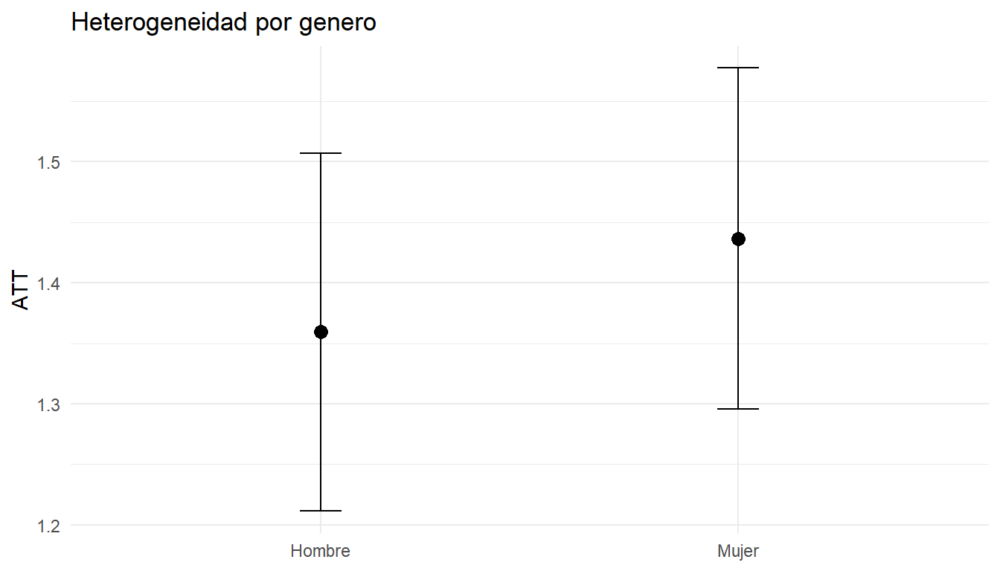
# Exportar:
# ggsave("resultados/heterogeneidad_genero.png", width = 7, height = 4, dpi = 300)17.2 15.2 Event studies por subgrupo
dyn_mujer <- aggte(att_dr_mujer, type = "dynamic")
dyn_hombre <- aggte(att_dr_hombre, type = "dynamic")
summary(dyn_mujer)
Call:
aggte(MP = att_dr_mujer, type = "dynamic")
Reference: Callaway, Brantly and Pedro H.C. Sant'Anna. "Difference-in-Differences with Multiple Time Periods." Journal of Econometrics, Vol. 225, No. 2, pp. 200-230, 2021. <https://doi.org/10.1016/j.jeconom.2020.12.001>, <https://arxiv.org/abs/1803.09015>
Overall summary of ATT's based on event-study/dynamic aggregation:
ATT Std. Error [ 95% Conf. Int.]
1.491 0.0755 1.3431 1.639 *
Dynamic Effects:
Event time Estimate Std. Error [95% Simult. Conf. Band]
-7 0.1071 0.1581 -0.3459 0.5601
-6 -0.0253 0.1058 -0.3286 0.2780
-5 0.0499 0.0915 -0.2122 0.3121
-4 -0.0808 0.0838 -0.3210 0.1594
-3 0.0958 0.0875 -0.1551 0.3466
-2 -0.1084 0.0901 -0.3666 0.1498
-1 0.0643 0.0797 -0.1642 0.2928
0 0.8756 0.0837 0.6357 1.1156 *
1 1.2477 0.0815 1.0140 1.4814 *
2 1.7568 0.0878 1.5053 2.0084 *
3 1.7600 0.1004 1.4722 2.0477 *
4 1.7499 0.1318 1.3723 2.1275 *
5 1.5560 0.1724 1.0618 2.0501 *
---
Signif. codes: `*' confidence band does not cover 0
Control Group: Not Yet Treated, Anticipation Periods: 0
Estimation Method: Doubly Robustsummary(dyn_hombre)
Call:
aggte(MP = att_dr_hombre, type = "dynamic")
Reference: Callaway, Brantly and Pedro H.C. Sant'Anna. "Difference-in-Differences with Multiple Time Periods." Journal of Econometrics, Vol. 225, No. 2, pp. 200-230, 2021. <https://doi.org/10.1016/j.jeconom.2020.12.001>, <https://arxiv.org/abs/1803.09015>
Overall summary of ATT's based on event-study/dynamic aggregation:
ATT Std. Error [ 95% Conf. Int.]
1.4638 0.0791 1.3088 1.6188 *
Dynamic Effects:
Event time Estimate Std. Error [95% Simult. Conf. Band]
-7 -0.0528 0.1927 -0.5998 0.4942
-6 0.0524 0.1377 -0.3383 0.4432
-5 0.0066 0.1016 -0.2817 0.2950
-4 -0.0645 0.0897 -0.3190 0.1900
-3 0.0032 0.0866 -0.2426 0.2490
-2 0.1189 0.0778 -0.1019 0.3397
-1 -0.0829 0.0797 -0.3092 0.1434
0 0.7414 0.0826 0.5069 0.9758 *
1 1.0280 0.0887 0.7762 1.2798 *
2 1.6543 0.0880 1.4045 1.9041 *
3 1.7859 0.0968 1.5111 2.0607 *
4 1.6887 0.1239 1.3370 2.0405 *
5 1.8845 0.1672 1.4098 2.3591 *
---
Signif. codes: `*' confidence band does not cover 0
Control Group: Not Yet Treated, Anticipation Periods: 0
Estimation Method: Doubly Robusthet_dyn_gender <- bind_rows(
tibble(subgrupo = "Mujer", event_time = dyn_mujer$egt,
att = dyn_mujer$att.egt, se = dyn_mujer$se.egt),
tibble(subgrupo = "Hombre", event_time = dyn_hombre$egt,
att = dyn_hombre$att.egt, se = dyn_hombre$se.egt)
) %>%
mutate(ci_low = att - 1.96 * se,
ci_high = att + 1.96 * se)
het_dyn_gender %>%
ggplot(aes(x = event_time, y = att, color = subgrupo)) +
geom_hline(yintercept = 0, linetype = "dashed") +
geom_point() +
geom_line() +
geom_errorbar(aes(ymin = ci_low, ymax = ci_high), width = 0.1, alpha = 0.6) +
labs(x = "Tiempo relativo", y = "ATT", color = NULL,
title = "Event studies por genero") +
theme_minimal()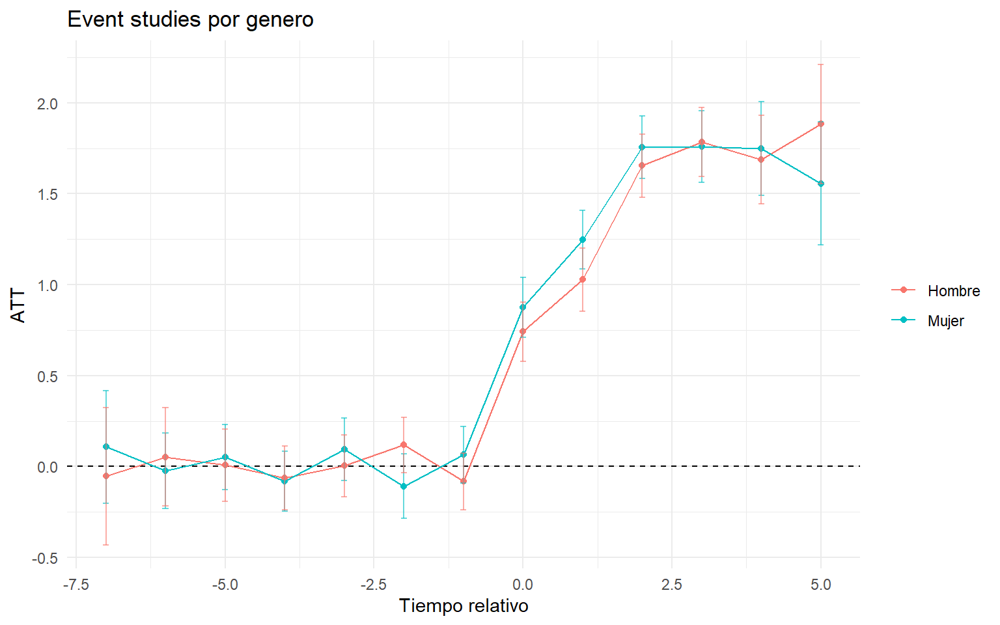
# Exportar:
# readr::write_csv(het_dyn_gender, "resultados/event_studies_genero.csv")
# ggsave("resultados/event_studies_genero.png", width = 8, height = 5, dpi = 300)17.3 15.3 Heterogeneidad por sector
sectors <- unique(df$sector)
sector_results <- list()
for (s in sectors) {
att_s <- att_gt(
yname = "y",
tname = "year",
idname = "id",
gname = "G",
xformla = ~ x1_std + x2 + log_size0_std + gender,
data = df %>% filter(sector == s),
panel = TRUE,
control_group = "notyettreated",
est_method = "dr",
bstrap = TRUE,
biters = 999,
cband = TRUE
)
agg_s <- aggte(att_s, type = "simple")
sector_results[[s]] <- tibble(
sector = s,
att = agg_s$overall.att,
se = agg_s$overall.se
)
}
het_sector_table <- bind_rows(sector_results) %>%
mutate(ci_low = att - 1.96 * se,
ci_high = att + 1.96 * se)
het_sector_tablehet_sector_table %>%
ggplot(aes(x = reorder(sector, att), y = att)) +
geom_point(size = 3) +
geom_errorbar(aes(ymin = ci_low, ymax = ci_high), width = 0.1) +
coord_flip() +
labs(x = NULL, y = "ATT", title = "Heterogeneidad por sector") +
theme_minimal()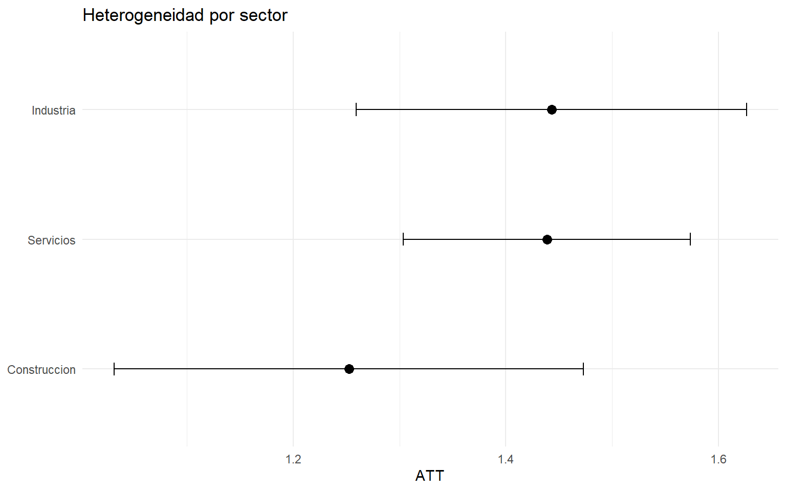
# Exportar:
# readr::write_csv(het_sector_table, "resultados/heterogeneidad_sector.csv")
# ggsave("resultados/heterogeneidad_sector.png", width = 8, height = 5, dpi = 300)17.4 15.4 Heterogeneidad por cohortes
agg_dr_group <- aggte(att_dr, type = "group")
summary(agg_dr_group)
Call:
aggte(MP = att_dr, type = "group")
Reference: Callaway, Brantly and Pedro H.C. Sant'Anna. "Difference-in-Differences with Multiple Time Periods." Journal of Econometrics, Vol. 225, No. 2, pp. 200-230, 2021. <https://doi.org/10.1016/j.jeconom.2020.12.001>, <https://arxiv.org/abs/1803.09015>
Overall summary of ATT's based on group/cohort aggregation:
ATT Std. Error [ 95% Conf. Int.]
1.3714 0.0488 1.2756 1.4671 *
Group Effects:
Group Estimate Std. Error [95% Simult. Conf. Band]
2015 1.4167 0.0828 1.2070 1.6263 *
2016 1.4668 0.0977 1.2194 1.7142 *
2017 1.3502 0.1092 1.0736 1.6269 *
2018 1.2333 0.1052 0.9669 1.4997 *
---
Signif. codes: `*' confidence band does not cover 0
Control Group: Not Yet Treated, Anticipation Periods: 0
Estimation Method: Doubly Robustggdid(agg_dr_group) +
labs(title = "Heterogeneidad por cohorte de tratamiento")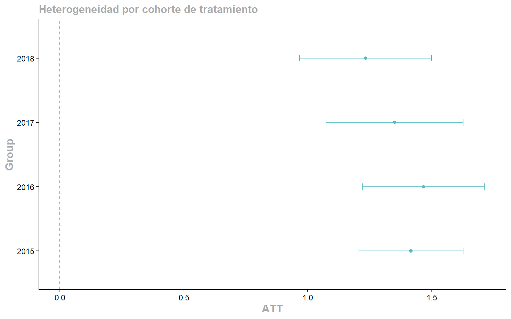
# Exportar:
# ggsave("resultados/heterogeneidad_cohorte.png", width = 8, height = 5, dpi = 300)17.5 15.5 Heterogeneidad dinámica
summary(agg_dr_dynamic)
Call:
aggte(MP = att_dr, type = "dynamic")
Reference: Callaway, Brantly and Pedro H.C. Sant'Anna. "Difference-in-Differences with Multiple Time Periods." Journal of Econometrics, Vol. 225, No. 2, pp. 200-230, 2021. <https://doi.org/10.1016/j.jeconom.2020.12.001>, <https://arxiv.org/abs/1803.09015>
Overall summary of ATT's based on event-study/dynamic aggregation:
ATT Std. Error [ 95% Conf. Int.]
1.4708 0.0523 1.3684 1.5733 *
Dynamic Effects:
Event time Estimate Std. Error [95% Simult. Conf. Band]
-7 0.0327 0.1213 -0.3188 0.3842
-6 0.0074 0.0832 -0.2338 0.2485
-5 0.0319 0.0681 -0.1655 0.2293
-4 -0.0679 0.0612 -0.2454 0.1095
-3 0.0487 0.0612 -0.1285 0.2260
-2 -0.0091 0.0596 -0.1818 0.1636
-1 0.0055 0.0563 -0.1578 0.1688
0 0.8027 0.0605 0.6275 0.9778 *
1 1.1340 0.0615 0.9559 1.3121 *
2 1.6999 0.0621 1.5199 1.8798 *
3 1.7540 0.0710 1.5482 1.9597 *
4 1.7051 0.0858 1.4565 1.9537 *
5 1.7295 0.1224 1.3747 2.0842 *
---
Signif. codes: `*' confidence band does not cover 0
Control Group: Not Yet Treated, Anticipation Periods: 0
Estimation Method: Doubly Robustggdid(agg_dr_dynamic) +
labs(title = "Heterogeneidad dinamica: efecto por tiempo desde tratamiento")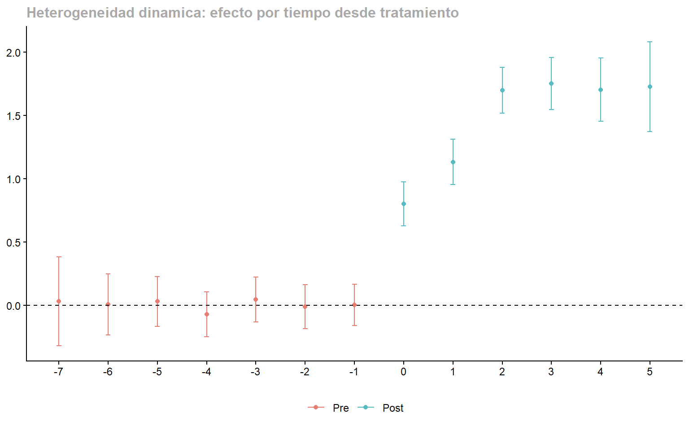
17.6 15.6 Heterogeneidad por variable continua: bins
Una forma transparente de analizar heterogeneidad por una variable continua es crear grupos, por ejemplo cuartiles de tamaño inicial.
df <- df %>%
mutate(size_quartile = ntile(size0, 4))
size_results <- list()
for (q in 1:4) {
att_q <- att_gt(
yname = "y",
tname = "year",
idname = "id",
gname = "G",
xformla = ~ x1_std + x2 + gender + sector,
data = df %>% filter(size_quartile == q),
panel = TRUE,
control_group = "notyettreated",
est_method = "dr",
bstrap = TRUE,
biters = 999,
cband = TRUE
)
agg_q <- aggte(att_q, type = "simple")
size_results[[q]] <- tibble(
size_quartile = q,
att = agg_q$overall.att,
se = agg_q$overall.se
)
}
het_size_table <- bind_rows(size_results) %>%
mutate(ci_low = att - 1.96 * se,
ci_high = att + 1.96 * se)
het_size_tablehet_size_table %>%
ggplot(aes(x = factor(size_quartile), y = att)) +
geom_point(size = 3) +
geom_errorbar(aes(ymin = ci_low, ymax = ci_high), width = 0.1) +
labs(x = "Cuartil de tamaño inicial", y = "ATT",
title = "Heterogeneidad por tamaño inicial") +
theme_minimal()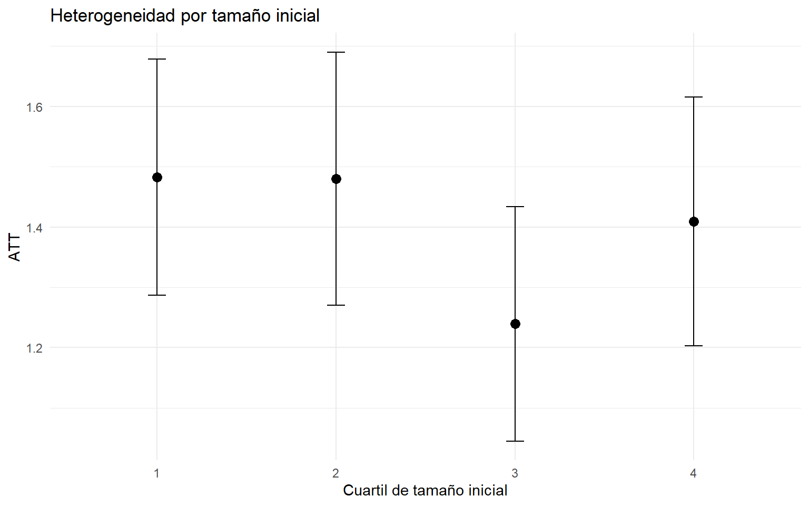
# Exportar:
# readr::write_csv(het_size_table, "resultados/heterogeneidad_size.csv")
# ggsave("resultados/heterogeneidad_size.png", width = 8, height = 5, dpi = 300)17.7 15.7 Interacciones en TWFE para heterogeneidad
Esta opción es sencilla, pero hereda los problemas de TWFE en diseños escalonados.
twfe_gender_het <- feols(
y ~ D * gender | id + year,
data = df,
cluster = ~id
)
summary(twfe_gender_het)OLS estimation, Dep. Var.: y
Observations: 13,200
Fixed-effects: id: 1,200, year: 11
Standard-errors: Clustered (id)
Estimate Std. Error t value Pr(>|t|)
D 1.150054 0.042466 27.08158 < 2.2e-16 ***
D:genderMujer 0.185343 0.048136 3.85038 0.00012416 ***
... 1 variable was removed because of collinearity (genderMujer)
---
Signif. codes: 0 '***' 0.001 '**' 0.01 '*' 0.05 '.' 0.1 ' ' 1
RMSE: 0.973536 Adj. R2: 0.701951
Within R2: 0.107416modelsummary(
list("TWFE heterogeneidad genero" = twfe_gender_het),
statistic = "({std.error})",
stars = TRUE,
output = "gt"
)| TWFE heterogeneidad genero | |
|---|---|
| D | 1.150*** |
| (0.042) | |
| D × genderMujer | 0.185*** |
| (0.048) | |
| Num.Obs. | 13200 |
| R2 | 0.729 |
| R2 Adj. | 0.702 |
| R2 Within | 0.107 |
| R2 Within Adj. | 0.107 |
| AIC | 39175.9 |
| BIC | 48251.4 |
| RMSE | 0.97 |
| Std.Errors | by: id |
| FE: id | X |
| FE: year | X |
| + p < 0.1, * p < 0.05, ** p < 0.01, *** p < 0.001 | |
# Exportar:
# modelsummary(list("TWFE heterogeneidad genero" = twfe_gender_het),
# output = "resultados/twfe_heterogeneidad_genero.html")18 16. Robustez y sensibilidad
18.1 16.1 Cambiar grupo de control
att_dr_never <- att_gt(
yname = "y",
tname = "year",
idname = "id",
gname = "G",
xformla = ~ x1_std + x2 + log_size0_std + gender + sector,
data = df,
panel = TRUE,
control_group = "nevertreated",
est_method = "dr",
bstrap = TRUE,
biters = 999,
cband = TRUE
)
agg_dr_never <- aggte(att_dr_never, type = "simple")
summary(agg_dr_never)
Call:
aggte(MP = att_dr_never, type = "simple")
Reference: Callaway, Brantly and Pedro H.C. Sant'Anna. "Difference-in-Differences with Multiple Time Periods." Journal of Econometrics, Vol. 225, No. 2, pp. 200-230, 2021. <https://doi.org/10.1016/j.jeconom.2020.12.001>, <https://arxiv.org/abs/1803.09015>
ATT Std. Error [ 95% Conf. Int.]
1.3903 0.0482 1.2958 1.4848 *
---
Signif. codes: `*' confidence band does not cover 0
Control Group: Never Treated, Anticipation Periods: 0
Estimation Method: Doubly Robustcontrol_group_table <- tibble(
control_group = c("notyettreated", "nevertreated"),
att = c(agg_dr_simple$overall.att, agg_dr_never$overall.att),
se = c(agg_dr_simple$overall.se, agg_dr_never$overall.se)
) %>%
mutate(ci_low = att - 1.96 * se,
ci_high = att + 1.96 * se)
control_group_table# Exportar:
# readr::write_csv(control_group_table, "resultados/robustez_grupo_control.csv")18.2 16.2 Cambiar covariables
att_dr_x_small <- att_gt(
yname = "y",
tname = "year",
idname = "id",
gname = "G",
xformla = ~ x1_std + x2,
data = df,
panel = TRUE,
control_group = "notyettreated",
est_method = "dr",
bstrap = TRUE,
biters = 999,
cband = TRUE
)
agg_dr_x_small <- aggte(att_dr_x_small, type = "simple")
summary(agg_dr_x_small)
Call:
aggte(MP = att_dr_x_small, type = "simple")
Reference: Callaway, Brantly and Pedro H.C. Sant'Anna. "Difference-in-Differences with Multiple Time Periods." Journal of Econometrics, Vol. 225, No. 2, pp. 200-230, 2021. <https://doi.org/10.1016/j.jeconom.2020.12.001>, <https://arxiv.org/abs/1803.09015>
ATT Std. Error [ 95% Conf. Int.]
1.391 0.0495 1.2941 1.488 *
---
Signif. codes: `*' confidence band does not cover 0
Control Group: Not Yet Treated, Anticipation Periods: 0
Estimation Method: Doubly Robustcovariate_robustness_table <- tibble(
especificacion = c("X completa", "X reducida"),
att = c(agg_dr_simple$overall.att, agg_dr_x_small$overall.att),
se = c(agg_dr_simple$overall.se, agg_dr_x_small$overall.se)
) %>%
mutate(ci_low = att - 1.96 * se,
ci_high = att + 1.96 * se)
covariate_robustness_table# Exportar:
# readr::write_csv(covariate_robustness_table, "resultados/robustez_covariables.csv")18.3 16.3 Excluir cohortes tempranas o tardías
df_no_early <- df %>% filter(G == 0 | G >= 2016)
att_no_early <- att_gt(
yname = "y",
tname = "year",
idname = "id",
gname = "G",
xformla = ~ x1_std + x2 + log_size0_std + gender + sector,
data = df_no_early,
panel = TRUE,
control_group = "notyettreated",
est_method = "dr",
bstrap = TRUE,
biters = 999,
cband = TRUE
)
agg_no_early <- aggte(att_no_early, type = "simple")
summary(agg_no_early)
Call:
aggte(MP = att_no_early, type = "simple")
Reference: Callaway, Brantly and Pedro H.C. Sant'Anna. "Difference-in-Differences with Multiple Time Periods." Journal of Econometrics, Vol. 225, No. 2, pp. 200-230, 2021. <https://doi.org/10.1016/j.jeconom.2020.12.001>, <https://arxiv.org/abs/1803.09015>
ATT Std. Error [ 95% Conf. Int.]
1.3752 0.0602 1.2573 1.4932 *
---
Signif. codes: `*' confidence band does not cover 0
Control Group: Not Yet Treated, Anticipation Periods: 0
Estimation Method: Doubly Robustcohort_robustness_table <- tibble(
especificacion = c("Muestra completa", "Sin cohorte 2015"),
att = c(agg_dr_simple$overall.att, agg_no_early$overall.att),
se = c(agg_dr_simple$overall.se, agg_no_early$overall.se)
) %>%
mutate(ci_low = att - 1.96 * se,
ci_high = att + 1.96 * se)
cohort_robustness_table# Exportar:
# readr::write_csv(cohort_robustness_table, "resultados/robustez_cohortes.csv")19 17. Buenas prácticas y errores comunes
19.1 17.1 Buenas prácticas
- Definir claramente el tratamiento y la primera fecha de tratamiento.
- Distinguir diseño 2x2, multiperiodo simple y adopción escalonada.
- Usar estimadores diseñados para adopción escalonada cuando corresponda.
- Graficar tendencias antes de estimar.
- No interpretar no-rechazo de pretrends como prueba definitiva.
- Usar covariables pretratamiento si la identificación condicional es más creíble.
- Revisar overlap si se usa IPW o DR.
- Reportar especificaciones alternativas.
- Analizar heterogeneidad solo si hay soporte suficiente dentro de subgrupos.
- Clusterizar al nivel adecuado.
19.2 17.2 Errores comunes
- Usar TWFE en diseños escalonados sin discutir heterogeneidad.
- Meter covariables post-tratamiento.
- Meter covariables invariantes en TWFE esperando identificar su coeficiente.
- Usar IPW sin mirar pesos u overlap.
- Usar RA con extrapolación fuerte.
- Pensar que DR arregla una mala elección de covariables.
- Hacer heterogeneidad con submuestras demasiado pequeñas.
- Exportar solo coeficientes agregados y no mostrar dinámica.
20 18. Workflow recomendado
Un flujo de trabajo razonable sería:
- Preparar datos:
id,time,y,D,G, covariables baseline. - Identificar si hay adopción escalonada.
- Graficar tendencias.
- Estimar TWFE como benchmark.
- Estimar event study moderno.
- Decidir si la hipótesis creíble es incondicional o condicional en covariables.
- Si se usan covariables, estimar DR como especificación principal.
- Comparar con IPW y RA.
- Evaluar overlap, balance y sensibilidad.
- Analizar heterogeneidad.
- Reportar tablas y gráficos.
21 19. Plantilla mínima para un análisis real
Este bloque resume el flujo mínimo que normalmente copiaría para un proyecto real.
# 1. Preparar datos
# df <- read_csv("data/mis_datos.csv") %>%
# mutate(
# G = if_else(is.na(first_treat_year), 0, first_treat_year),
# D = as.integer(G > 0 & year >= G)
# )
# 2. Tendencias descriptivas
# df %>%
# mutate(group = if_else(G == 0, "Nunca tratados", "Alguna vez tratados")) %>%
# group_by(group, year) %>%
# summarise(ybar = mean(y, na.rm = TRUE), .groups = "drop") %>%
# ggplot(aes(year, ybar, color = group)) +
# geom_line() +
# geom_point() +
# theme_minimal()
# 3. TWFE benchmark
# twfe <- feols(y ~ D | id + year, data = df, cluster = ~id)
# summary(twfe)
# 4. DR DiD con adopcion escalonada
# att_dr <- att_gt(
# yname = "y",
# tname = "year",
# idname = "id",
# gname = "G",
# xformla = ~ x1 + x2 + x3,
# data = df,
# panel = TRUE,
# control_group = "notyettreated",
# est_method = "dr",
# bstrap = TRUE,
# biters = 999,
# cband = TRUE
# )
# 5. ATT agregado
# agg_simple <- aggte(att_dr, type = "simple")
# summary(agg_simple)
# 6. Event study
# agg_dynamic <- aggte(att_dr, type = "dynamic")
# ggdid(agg_dynamic)
# 7. Exportar resultados
# table_att <- tibble(
# att = agg_simple$overall.att,
# se = agg_simple$overall.se,
# ci_low = att - 1.96 * se,
# ci_high = att + 1.96 * se
# )
# write_csv(table_att, "resultados/att_dr.csv")
# ggsave("resultados/event_study_dr.png", width = 8, height = 5, dpi = 300)22 20. Conclusión
La diferencia entre métodos no es solo computacional. Cada estimador construye el contrafactual de forma distinta:
- TWFE compara cambios residuales dentro de una estructura lineal con efectos fijos.
- IPW repondera controles para parecerse a tratados.
- RA imputa el contrafactual usando modelos de outcome.
- DR combina reponderación e imputación.
En diseños escalonados, el objeto natural es ATT(g,t). Por eso conviene usar estimadores diseñados para ese contexto, como did::att_gt() o event studies tipo sunab(), en vez de confiar únicamente en TWFE.